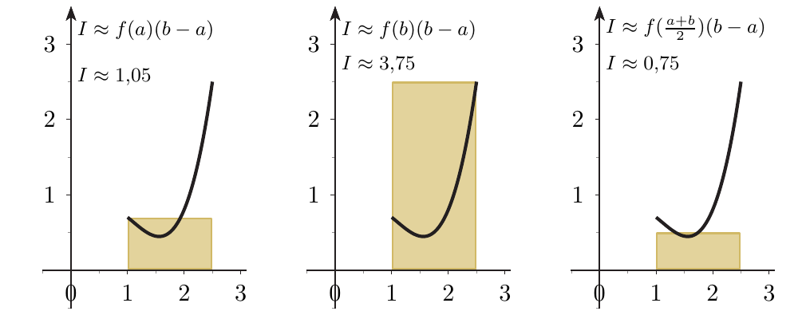
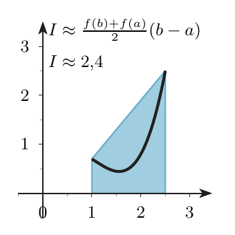
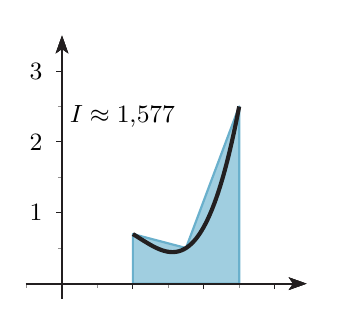
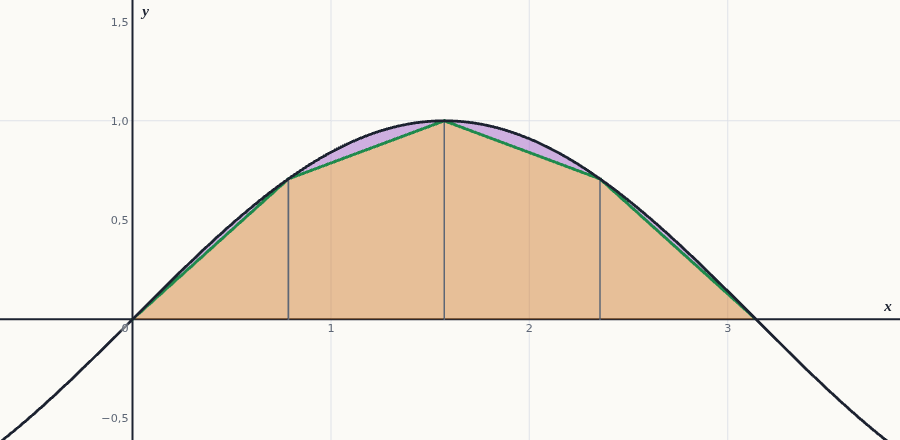
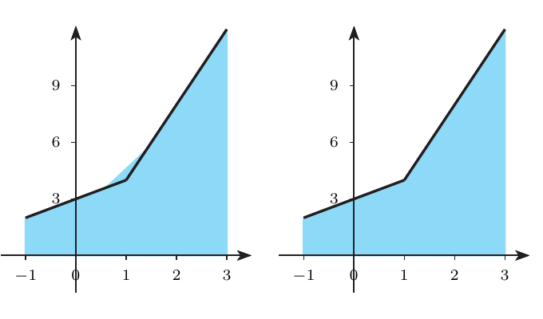
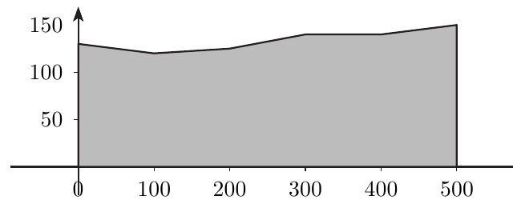

Cuando no hay primitiva a mano, o solo se conocen unos cuantos valores medidos, la integral se aproxima cambiando la curva por piezas sencillas cuya área sí sabemos calcular: rectángulos, trapecios o parábolas. Aprenderás las tres fórmulas, a aplicarlas con una tabla de datos y a decidir cuántos subintervalos hacen falta para garantizar una precisión.
Libro oficial: Cálculo para Ingenieros, §6.4 (pp. 263-270)Ejercicios: E Ej. 6.36–6.41Examen: 10 problemas de X⏱ ~4 h de estudio
U oficial
S Stewart
L Larson
E ejercicios
X exámenes
P propio
— pasa el ratón (o toca) por cada etiqueta para ver libro y página; en pantallas anchas aparecen en el margen derecho.
La idea del tema en una frase
Imagina que debes medir el área de una finca con un lado curvo. No sabes una fórmula para la curva, pero sí medir su altura en varios puntos. Lo natural es sustituir la parte curva por piezas sencillas (rectángulos, trapecios o arcos de parábola), calcular el área de las piezas y sumarla. Eso es integrar numéricamente: cuantas más piezas y mejor ajustadas, menos error.
Si solo tienes un rato, llévate esto. El resto de la página lo desarrolla con ejemplos y ejercicios.
Método en 4 pasos
Mira qué te dan y qué te piden: ¿una función o una tabla de valores?, ¿trapecio, Simpson o rectángulos?, ¿simple o compuesta?, ¿hay que comparar con el valor exacto o dar una cota?
Cuenta antes de calcular: $n$ subintervalos son $n+1$ nodos (rectángulos y trapecio) o $2n+1$ (Simpson compuesta, siempre impar); $h=\frac{b-a}n$. Con una tabla de $N$ datos: trapecio en $N-1$ subintervalos; Simpson solo si $N$ es impar.
Haz la tabla $x_k\mid f_k$ y marca cada valor: extremo, central (o par) o impar. Sustituye en la fórmula.
Comprueba el orden de magnitud (longitud $\times$ valor medio) y, si se puede, compara con Barrow.
Qué hago según lo que veo
¿Tabla de datos igualmente espaciados? $\to$ trapecio compuesto con todos los datos; Simpson compuesta si el número de datos es impar.
¿Datos con separaciones distintas? $\to$ trapecio simple en cada tramo, con su anchura, y sumar.
¿Simpson y faltan valores en los nodos? $\to$ se completan con el polinomio interpolador.
¿«Cuántos subintervalos garantizan…» o «cota del error»? $\to$ $M_2$ o $M_4$ (máximo del valor absoluto de la derivada), cota $\le$ tolerancia, despejar $m$ y redondear hacia arriba.
¿Solo dos datos? $\to$ el trapecio sí; Simpson no (le falta el punto medio).
Fórmulas y enunciados, con su «cuándo se usa»
Fórmula o enunciado
Cuándo se usa
$\frac h2\,(E+2C)$, con $h=\frac{b-a}n$
Trapecio compuesto con $n+1$ nodos (U p.267).
$\frac h6\,(E+2P+4I)$, nodos cada $\frac h2$
Simpson compuesta con $2n+1$ nodos; $h$ = longitud de cada subintervalo (U p.268).
$\frac{b-a}6\big(f(a)+4f(\tfrac{a+b}2)+f(b)\big)$
Simpson simple con tres datos equiespaciados (U p.268).
Cota del error y número de subintervalos (U pp.269-270).
Trapecio exacto en rectas; Simpson exacto hasta grado $3$
Decidir si una fórmula acierta (E 6.38; propio 2).
Qué cae
En los exámenes resueltos hay 10 problemas de este tema: trapecio o Simpson con una función y comparación con el valor exacto (5), trapecio y Simpson con una tabla de datos (3) y polinomio interpolador más Simpson (2). En el libro de ejercicios son E 6.36-6.41. Cotas del error y rectángulos no aparecen en X, pero sí en el libro. Tabla por tipo: pestaña Examen.
U pp.264-270P
Camino de estudio: elige tu nivel
Empieza por «Mínimo»; luego «Completo» y, para nota alta, «Reto». Marca cada ejercicio al terminarlo.
Las fórmulas del trapecio (3) y de Simpson (4), la cota del error (6) y el mapa de decisión (7).
Un ejercicio de cada tipo:
E 6.37 (qué fórmula admiten los datos), E 6.39 (área con una tabla), E 6.40 (función con $n=4$), E 6.41 (las seis fórmulas), propio 3 (cuántos subintervalos) y los exámenes X1 (tabla), X2 (trapecio y Simpson) y X4 (tres datos y parábola).
E 6.36-6.41, los 10 exámenes, los ejemplos propios y todas las prácticas.
🟣 Reto · ≈ +1 h
E 6.38 (¿cuándo es exacto el trapecio?), propio 4 (buscar $M_4$), X7 (Simpson compuesta con $n=3$), X9 (interpolador y Simpson compuesta) y las prácticas ★★.
Verás solo lo esencial; desmarca para ver todo.
0Antes de empezar U p.263
Lo que vas a aprender. qué debes saber antes de empezar (la integral como área, Barrow, extremos absolutos e interpolación) y qué se pide en los ejercicios y en el examen.
Qué necesitas saber ya
La integral como área y la aditividad $\int_a^bf=\int_a^cf+\int_c^bf$ (tema 6.1).
Regla de Barrow (tema 6.2) y técnicas de primitivas (tema 6.3): para comparar con el valor exacto.
Extremos absolutos de una función continua en un intervalo cerrado (tema 3.4): hace falta para acotar $\lvert f''\rvert$ y $\lvert f^{(4)}\rvert$ en las cotas del error.
Polinomio interpolador (tema 3.3): aparece en varios problemas de examen.
Mapa del tema: qué se pide en los ejercicios y en el examen
Aplicar el trapecio (simple o compuesto) y Simpson (simple o compuesta) a una función dada o a una tabla de valores. Es lo que más aparece en X.
Comparar con el valor exacto y explicar por qué una fórmula se acerca más que otra (rectas frente a parábolas).
Contar bien: nodos, subintervalos y cuál es la $h$ de cada fórmula.
Cotas de error y «¿cuántos subintervalos hacen falta?» (U Ej. 6.34 y 6.35). En X no hay preguntas de cota, pero es materia del libro oficial.
1Para qué sirve y cómo se piensa U pp.263-264
Lo que vas a aprender. cuándo conviene aproximar una integral y el plan común de todas las fórmulas: cambiar la curva por piezas sencillas cuya área sabemos calcular.
Cómo lo reconoces: no hay primitiva a mano, es muy larga de obtener, o solo tienes una tabla de valores medidos.
Qué haces: sustituyes $f$ por escalones, rectas o parábolas que pasan por los nodos, calculas esa área y, si hace falta, troceas $[a,b]$ en subintervalos.
Ejemplo mínimo: $\int_0^3f$ con $f(0)=42$, $f(3)=41$: trapecio $\frac{42+41}2\cdot3=124{,}5$.
Cuándo se usa y cuál es la idea común
La regla de Barrow necesita una primitiva de $f$. Pero a veces no se puede calcular (por ejemplo $\int e^{-x^2}dx$ no se expresa con funciones elementales), es larguísima, o solo conocemos los valores de $f$ en ciertos puntos de $[a,b]$ (mediciones). Entonces se aproxima la integral (E 6.36, más abajo). Todas las fórmulas siguen el mismo plan, apoyado en que la integral es un área y se puede trocear: $\int_a^bf=\int_a^cf+\int_c^bf$.
Sustituir $f$ por una función sencilla construida con valores de $f$ en ciertos puntos (los nodos): un escalón (rectángulo), una recta (trapecio) o una parábola (Simpson).
Calcular el área de esa función sencilla, que es fácil.
Si la aproximación es mala, dividir $[a,b]$ en subintervalos, aplicar la fórmula en cada uno y sumar (fórmulas compuestas): como con baldosas, cuantas más y más pequeñas, mejor se ajusta el borde curvo.
U p.263U p.264S p.507
2Fórmulas de los rectángulos U pp.264-266
Lo que vas a aprender. los rectángulos izquierdo, derecho y central, simples y compuestos, y a contar bien los nodos.
Cómo lo reconoces: piden «rectángulo izquierdo», «derecho» o «central» (punto medio).
Qué haces: calculas $h=\frac{b-a}n$, sumas los valores en $x_0,\dots,x_{n-1}$ (izquierdo), en $x_1,\dots,x_n$ (derecho) o en los puntos medios (central) y multiplicas por $h$.
Ejemplo mínimo: $\int_0^1x^2\,dx$ con $n=2$, izquierdo: $\frac12\big(0+\frac14\big)=\frac18$.
Idea intuitiva
La aproximación más burda: sustituir la curva por un escalón, un rectángulo de base $b-a$. ¿A qué altura? Se puede tomar la altura del extremo izquierdo, la del derecho o la del punto medio.
Definición 6.3 · Rectángulos (simples)
$$\begin{aligned}\int_a^bf(x)\,dx&\approx f(a)(b-a) &&(\text{izquierdo}),\\ \int_a^bf(x)\,dx&\approx f(b)(b-a) &&(\text{derecho}),\\ \int_a^bf(x)\,dx&\approx f\!\Big(\frac{a+b}2\Big)(b-a) &&(\text{central o punto medio}).\end{aligned}$$
U p.264
Ejemplo 6.29 de U · los tres rectángulos
Aproximar $I=\displaystyle\int_1^{5/2}f(x)\,dx$ con $f(x)=x^3-3{,}3x^2+3x$ (su valor exacto es $I=\frac{417}{320}=1{,}303125$, por Barrow).
Valores necesarios: $f(1)=0{,}7$, $f(2{,}5)=2{,}5$, $f(1{,}75)=0{,}503125$; la base es $b-a=1{,}5$.
Lectura: los tres se equivocan mucho (el exacto es $1{,}30$): un único rectángulo no sigue la curva.
U p.265

Aproximaciones del Ej. 6.29 con rectángulos izquierdo, derecho y central. U p.265
Definición 6.4 · Rectángulos compuestos
Se divide $[a,b]$ en $n$ subintervalos iguales de longitud $h=\frac{b-a}n$, con nodos $x_k=a+kh$, $k=0,1,\dots,n$. Entonces
$$\begin{aligned}\int_a^bf&\approx\frac{b-a}n\sum_{k=0}^{n-1}f(x_k) &&(\text{izq.}),\\ \int_a^bf&\approx\frac{b-a}n\sum_{k=1}^{n}f(x_k) &&(\text{der.}),\\ \int_a^bf&\approx\frac{b-a}n\sum_{k=0}^{n-1}f\!\Big(\frac{x_k+x_{k+1}}2\Big) &&(\text{central}).\end{aligned}$$
U p.266
Ejemplo 6.30 de U · rectángulos compuestos con 3 subintervalos
Central (puntos medios $1{,}25;\,1{,}75;\,2{,}25$): $0{,}5\,(f(1{,}25)+f(1{,}75)+f(2{,}25))=1{,}2421875\approx1{,}242$.
El central es el que mejor se acerca al exacto $1{,}303$: el «error por exceso» y el «error por defecto» dentro de cada rectángulo se compensan en parte.
U p.266
Error típico
En el rectángulo derecho compuesto, empezar la suma en $f(x_0)$ (eso es el izquierdo): el derecho suma $f(x_1),\dots,f(x_n)$.
3Fórmula del trapecio U pp.266-267
Lo que vas a aprender. la fórmula del trapecio, simple y compuesta, y a aplicarla a una función o a una tabla de datos.
Cómo lo reconoces: piden la «regla del trapecio», o te dan una tabla de datos igualmente espaciados.
Qué haces: haces la tabla de valores, separas extremos y centrales y calculas $\frac h2\,(E+2C)$.
Ejemplo mínimo: $\int_0^1x^2\,dx$ con $n=2$: $\frac{1/2}2\big(0+2\cdot\frac14+1\big)=\frac38$.
Idea intuitiva
En lugar de un escalón, tendemos una cuerda recta entre los puntos $(a,f(a))$ y $(b,f(b))$ de la gráfica, como una valla recta en el lado curvo de la finca. La región bajo esa cuerda es un trapecio «acostado» de altura $b-a$ y bases $f(a)$, $f(b)$. Su área es la media de las dos bases por la altura.
Con la misma $f$ del Ej. 6.29: $I\approx\dfrac{f(1)+f(2{,}5)}2\cdot1{,}5=\dfrac{0{,}7+2{,}5}2\cdot1{,}5=2{,}4$. La cuerda queda por encima de la curva (que baja y luego sube), así que sobra área.
U p.267

Trapecio simple del Ej. 6.31: $I\approx2{,}4$. U p.267
Definición 6.6 · Trapecio compuesto
Se divide $[a,b]$ en $n$ subintervalos iguales, $h=\frac{b-a}n$, $x_k=a+kh$, $f_k=f(x_k)$, $k=0,\dots,n$, y se aplica el trapecio en cada uno:
$$\int_a^bf(x)\,dx\approx\frac h2\big(f_0+2f_1+2f_2+\dots+2f_{n-1}+f_n\big).$$
Regla para recordarla: $I\approx\dfrac h2\,(\text{Extremos}+2\cdot\text{Centrales})$. $n$ subintervalos = $n+1$ nodos. Los centrales llevan un 2 porque cada nodo interior es el borde derecho de un trapecio y el izquierdo del siguiente: su altura se usa dos veces; los extremos solo pertenecen a un trapecio.
U p.267
Ejemplo 6.32 de U · trapecio compuesto con 2 subintervalos
Con dos trapecios el error baja de $1{,}10$ (trapecio simple) a $0{,}27$.
U p.267

Trapecio compuesto con dos subintervalos, Ej. 6.32: $I\approx1{,}577$. U p.267
Error típico
Olvidar el $2$ delante de los valores centrales (en el Ej. 6.32 saldría $1{,}39$) o tomar $h=b-a$ en vez de $\frac{b-a}n$.
Truco de examen
Si el enunciado da una tabla de $N$ valores igualmente espaciados, el trapecio compuesto usa todos: son $N-1$ subintervalos y $h$ es la separación entre datos (solo con datos igualmente espaciados; si no, trapecio simple en cada tramo: X10).
4Fórmula de Simpson U pp.267-269
Lo que vas a aprender. la fórmula de Simpson, simple y compuesta, los pesos $1,2,4$ y cuándo es exacta.
Cómo lo reconoces: piden «Simpson», o hay $3$ (o $2n+1$) datos igualmente espaciados.
Qué haces: marcas cada valor como extremo (peso $1$), par (peso $2$) o impar (peso $4$) y multiplicas por $\frac h6$, con $h$ la longitud de cada subintervalo.
Ejemplo mínimo: $\int_0^1x^2\,dx$ con Simpson simple: $\frac{0+4\cdot\frac14+1}6=\frac13$, exacto.
Idea intuitiva
Una recta solo puede imitar una curva sin curvatura. Una parábola sí puede «doblarse». Simpson toma tres puntos de la gráfica (los dos extremos y el punto medio), pasa por ellos la parábola (única) y calcula su área. Un arco se pega mucho mejor a una orilla curva que una valla recta.
S p.512
Definición 6.7 · Fórmula de Simpson
$$\int_a^bf(x)\,dx\approx\frac{f(a)+4f\!\big(\frac{a+b}2\big)+f(b)}6\,(b-a).$$
Usa 3 nodos igualmente espaciados: los extremos y el punto medio. Los pesos son $1,4,1$ (de suma $6$).
De dónde salen los pesos $1,4,1$: son los únicos que hacen la fórmula exacta para $1$, $x$ y $x^2$. Por ejemplo, en $[0,1]$ con $f(x)=x^2$: $\frac{0+4\cdot\frac14+1}6=\frac13=\int_0^1x^2dx$.
U p.268
Definición 6.8 · Simpson compuesta
Se divide $[a,b]$ en $n$ subintervalos iguales de longitud $h=\frac{b-a}n$ y a cada uno se le aplica la fórmula de Simpson. Los nodos son los extremos y el punto medio de cada subintervalo: $x_k=a+k\frac h2$, $k=0,1,\dots,2n$. Con $f_k=f(x_k)$,
$$\int_a^bf(x)\,dx\approx\frac h6\big(f_0+4f_1+2f_2+4f_3+\dots+2f_{2n-2}+4f_{2n-1}+f_{2n}\big).$$
Regla: $I\approx\dfrac h6\,(\text{Extremos}+2\cdot\text{Pares}+4\cdot\text{Impares})$. $n$ subintervalos = $2n+1$ nodos (siempre un número impar de nodos); los nodos impares son los puntos medios de los subintervalos.
U p.268
Error típico
En la compuesta, la $h$ de la fórmula es la longitud de cada subintervalo $\frac{b-a}n$, no la distancia entre nodos consecutivos (que es $\frac h2$). Con esa distancia el factor sería $\frac{h/2}3$; poner $\frac{h/2}6$ da la mitad.
Ejemplo 6.33 de U · Simpson simple y compuesta con una tabla
De una función se conoce la tabla
Tabla de valores del Ejemplo 6.33
$x$
1
1,1
1,2
1,3
1,4
1,5
1,6
$f(x)$
2
2,2
2,3
2,1
2,4
2,3
1,9
Aproximar $I=\int_1^{1{,}6}f(x)\,dx$ con Simpson y con Simpson compuesta en tres subintervalos.
Simpson simple: $b-a=0{,}6$ y el punto medio es $1{,}3$ (está en la tabla): $\dfrac{f(1)+4f(1{,}3)+f(1{,}6)}6\cdot0{,}6=\dfrac{2+8{,}4+1{,}9}6\cdot0{,}6=1{,}23$.
Contar para la compuesta: $n=3\Rightarrow h=\frac{1{,}6-1}3=0{,}2$; subintervalos $[1;1{,}2]$, $[1{,}2;1{,}4]$, $[1{,}4;1{,}6]$ con puntos medios $1{,}1;\,1{,}3;\,1{,}5$. Hay $2\cdot3+1=7$ nodos, justo los de la tabla.
Receta: haz una tabla $x_k\mid f_k$ y marca cada valor como extremo (peso $1$), par (peso $2$) o impar (peso $4$). El factor es $\frac h6$ con $h$ la longitud de cada subintervalo.
U pp.268-269
Propiedad · exactitud
El trapecio es exacto si $f$ es una recta; Simpson es exacto si $f$ es un polinomio de grado $\le3$ (no solo de grado $\le2$). Por ejemplo, con la cúbica $f$ del Ej. 6.29, Simpson simple da exactamente $\frac{1{,}5}6\big(0{,}7+4\cdot0{,}503125+2{,}5\big)=1{,}303125$. La razón y un contraejemplo están en el ejemplo propio 2.
propio
5Los tres métodos a la vez propio
Lo que vas a aprender. a ver, con el interactivo, cómo baja el error al subir $n$ y cómo se comparan los tres métodos entre sí.
Cómo lo reconoces: quieres comparar métodos o decidir cuál conviene para una precisión dada.
Qué haces: eliges función y método, subes $n$ y miras el error real frente a la cota de U.
Ejemplo mínimo: $\operatorname{sen}x$ en $[0,\pi]$, trapecio con $n=4$: $1{,}896119$ (error $-0{,}104$); Simpson con $n=2$: $2{,}004560$.
Prueba con el interactivo: elige una función y un método, y sube $n$. Observa (i) cómo la zona de error (color distinto) se estrecha, (ii) cómo el error baja mucho más deprisa con Simpson que con el trapecio, y (iii) que el trapecio y el punto medio se equivocan en sentidos opuestos.

Interactivo propio. Con $\operatorname{sen}x$ en $[0,\pi]$ (exacto $2$) y el trapecio con $n=4$ se lee $1{,}896119$ (error $-0{,}104$, la cuerda queda por debajo de una curva cóncava); con Simpson y $n=2$, $2{,}004560$. Con $e^x$ ($T_n$ sobra, curva convexa) y con $\frac1x$ el trapecio se pasa y el punto medio se queda corto. La «cota de U» es la del Teor. 6.3 (trapecio) o 6.4 (Simpson), con $M_2$ y $M_4$ el máximo de $\lvert f''\rvert$ y $\lvert f^{(4)}\rvert$ en el intervalo. propio
Lo que debes ver (y recordar)
$\int_0^\pi\operatorname{sen}x\,dx=2$: aproximaciones y errores (aprox. − exacto)
$n$
Trapecio $T_n$
error
Punto medio $M_n$
error
Simpson $S_n$
error
2
$1{,}570796$
$-4{,}29\cdot10^{-1}$
$2{,}221441$
$+2{,}21\cdot10^{-1}$
$2{,}004560$
$+4{,}56\cdot10^{-3}$
4
$1{,}896119$
$-1{,}04\cdot10^{-1}$
$2{,}052344$
$+5{,}23\cdot10^{-2}$
$2{,}000269$
$+2{,}69\cdot10^{-4}$
8
$1{,}974232$
$-2{,}58\cdot10^{-2}$
$2{,}012909$
$+1{,}29\cdot10^{-2}$
$2{,}000017$
$+1{,}66\cdot10^{-5}$
Al doblar $n$, el error del trapecio y del punto medio se divide por $\approx4$ (el error es proporcional a $1/n^2$, igual que la cota del Teor. 6.3) y el de Simpson por $\approx16$ (proporcional a $1/n^4$, como en el Teor. 6.4).
El error del punto medio es aproximadamente la mitad y de signo contrario al del trapecio.
Con los mismos $n$ subintervalos, $S_n=\dfrac{T_n+2M_n}3$ (comprobable: $\frac{1{,}570796+2\cdot2{,}221441}3=2{,}004560$). Simpson «mezcla» las dos aproximaciones para cancelar sus errores opuestos.
Valores calculados con sympy (15 cifras) con las fórmulas de U Def. 6.4, 6.6 y 6.8. La mitad del error del punto medio respecto al trapecio se refleja en las cotas $\frac{K(b-a)^3}{24n^2}$ frente a $\frac{K(b-a)^3}{12n^2}$.
propioS p.510
6¿Cuánto nos equivocamos? Cotas del error U pp.269-270
Lo que vas a aprender. a acotar el error de las fórmulas compuestas y a calcular cuántos subintervalos garantizan una precisión.
Cómo lo reconoces: piden una «cota del error» o «cuántos subintervalos garantizan…».
Qué haces: derivas, tomas $M$ = máximo de $\lvert f''\rvert$ (trapecio) o $\lvert f^{(4)}\rvert$ (Simpson) en $[a,b]$, impones cota $\le$ tolerancia, despejas $m$ y redondeas hacia arriba.
Ejemplo mínimo: $\int_1^2\frac{dx}x$ con el trapecio y error $\lt10^{-4}$: $M_2=2$, $m\ge40{,}82$, luego $m=41$.
Idea intuitiva
El error de una recta contra una curva depende de cuánto se curva la función: la mide $f''$. Si $f''$ es pequeña, el trapecio acierta; para Simpson, que ya copia parábolas, cuenta la cuarta derivada. Y cuanto más pequeño $h$, menos error. Las cotas ponen todo eso en una fórmula.
Teorema 6.3 · Error del trapecio compuesto
Con el trapecio compuesto en $m$ subintervalos ($m$ = número de subintervalos, el mismo $n$ de las Def. 6.6 y 6.8), el error absoluto $\varepsilon$ al sustituir la integral por la aproximación cumple
$$\varepsilon\le\frac{(b-a)^3}{12\,m^2}\,M_2,$$
donde $f$ es dos veces derivable y $\lvert f''(x)\rvert\le M_2$ para todo $x\in[a,b]$.
U p.269
Teorema 6.4 · Error de Simpson compuesta
Con Simpson compuesta en $m$ subintervalos ($m$ = el mismo $n$ de la Def. 6.8),
$$\varepsilon\le\frac{(b-a)^5}{2880\,m^4}\,M_4,$$
donde $f$ es cuatro veces derivable y $\lvert f^{(4)}(x)\rvert\le M_4$ para todo $x\in[a,b]$.
U p.270
Qué dicen las fórmulas
Si $f''\equiv0$ (recta), $M_2=0$ y el trapecio es exacto. Si $f^{(4)}\equiv0$ (polinomio de grado $\le3$), $M_4=0$ y Simpson es exacto.
Doblar $m$ divide la cota entre $2^2=4$ (trapecio) o $2^4=16$ (Simpson), como en la tabla del apartado 5.
Son cotas (garantías), no el error real: el error real suele ser menor.
Ejemplo 6.34 de U · error máximo del trapecio para $\int_0^1e^{-x^2}dx$
Cota del error con 10 y con 20 subintervalos.
Derivadas: $f'(x)=-2xe^{-x^2}$ y $f''(x)=2e^{-x^2}(2x^2-1)$.
Máximo de $\lvert f''\rvert$ en $[0,1]$ (extremos absolutos): candidatos $x=0$, $x=1$ y los ceros de $f'''(x)=4xe^{-x^2}(3-2x^2)$, que son $x=0$ y $x=\pm\sqrt{3/2}\approx\pm1{,}22$ (fuera de $[0,1]$). Valores: $\lvert f''(0)\rvert=2$, $\lvert f''(1)\rvert=2/e\approx0{,}74$. Luego $M_2=2$.
Cotas: $\varepsilon_{10}\le\dfrac{1^3}{12\cdot10^2}\cdot2=\dfrac1{600}$ y $\varepsilon_{20}\le\dfrac{1^3}{12\cdot20^2}\cdot2=\dfrac1{2400}$.
Receta: $M_2$ es el mayor de $\lvert f''\rvert$ en los extremos del intervalo y en los puntos interiores donde $f'''=0$.
Error típico
Tomar $M_2=\lvert f''(1)\rvert$ (el extremo derecho) o el máximo de $f''$ sin valor absoluto: aquí $f''(0)=-2$ es negativo y es el que manda.
U pp.269-270
Ejemplo 6.35 de U · cuántos subintervalos hacen falta con Simpson
Sea $f$ cuatro veces derivable con $\lvert f^{(4)}(x)\rvert\le50$ en todo $\mathbb R$. ¿En cuántos subintervalos hay que dividir $[0,2]$ para tener la seguridad de que Simpson compuesta aproxima $\int_0^2f$ con error menor que $0{,}0001$?
Imponer la cota del Teor. 6.4: $\dfrac{(2-0)^5}{2880\,m^4}\cdot50\le0{,}0001$.
Despejar (todo es positivo): $m^4\ge\dfrac{2^5\cdot50}{2880\cdot0{,}0001}=\dfrac{2^5\cdot50}{0{,}288}\approx5555{,}6$, y la raíz cuarta (creciente) da $m\ge8{,}6334$.
Redondear hacia arriba: $m=9$ subintervalos (es decir, $2\cdot9+1=19$ nodos).
Receta: escribir cota $\le$ tolerancia, despejar $m$ y tomar el primer entero mayor o igual. Trapecio: $m\ge\sqrt{\frac{(b-a)^3M_2}{12\,\text{tol}}}$. Simpson: $m\ge\sqrt[4]{\frac{(b-a)^5M_4}{2880\,\text{tol}}}$.
Error típico
Redondear $8{,}63$ a $8$ (no garantiza la precisión) o contestar «9 nodos»: son $9$ subintervalos y $19$ nodos.
U p.270
7Cómo decidir qué hacer: mapa del tema P
Lo que vas a aprender. a decidir qué hacer según lo que te dan y lo que te piden, con un mapa de decisión paso a paso.
Léelo de arriba abajo: en cada pregunta, «no» baja a la siguiente y «sí» te lleva a la acción de la derecha. Lo que más puntos se pierde: confundir nodos con subintervalos, olvidar el $2$ de los centrales o los pesos $2$ y $4$ de Simpson, poner mal la $h$ (en Simpson compuesta es la longitud de cada subintervalo) y redondear hacia abajo el número de subintervalos. Al final, comprueba siempre el orden de magnitud: longitud $\times$ valor medio U pp.267-268.
Ver la tabla con el detalle de cada caso y la receta completa
Veo…
Hago…
Ojo con…
«Aproxime con rectángulos»
Izquierdo, derecho o central, simples o compuestos (U pp.264-266)
El derecho empieza en $f(x_1)$; el central usa puntos medios
«Regla del trapecio» con una función
$\frac h2(E+2C)$ con $n+1$ nodos (U p.267)
El $2$ de los centrales; $h=\frac{b-a}n$
Tabla de $N$ datos igualmente espaciados
Trapecio compuesto con todos ($N-1$ subintervalos)
Usarlos todos; comprobar el espaciado
Datos con separaciones distintas
Trapecio simple en cada tramo y sumar (X10)
No existe una $h$ común
«Regla de Simpson» con tres datos
$\frac{b-a}6(f(a)+4f(\frac{a+b}2)+f(b))$ (U p.268)
Falta el punto medio: no se puede (E 6.37)
Simpson compuesta en $n$ subintervalos
$\frac h6(E+2P+4I)$ con $2n+1$ nodos
$h$ es la longitud del subintervalo, no el paso entre nodos
Faltan valores en los nodos
Polinomio interpolador (U §3.3) y evaluarlo (X5, X9)
Simpson es exacto si el polinomio es de grado $\le3$
«Compare con el valor real»
Barrow y error absoluto; explicar recta frente a parábola (X2, X3, X4)
Signo del error: convexa $\Rightarrow$ trapecio por exceso
«Cota del error» o «cuántos subintervalos»
Teor. 6.3 y 6.4 (U pp.269-270); despejar $m$
$M$ = máximo del valor absoluto en todo $[a,b]$; redondear hacia arriba
Receta general del tema:
¿Qué fórmula y si es simple o compuesta? Con una tabla de $N$ nodos: trapecio en $N-1$ subintervalos; Simpson solo si $N$ es impar, en $\frac{N-1}2$ subintervalos.
Tabla $x_k\mid f_k$ y marcar cada valor como extremo, central/par o impar.
Sustituir en $\frac h2(E+2C)$ o $\frac h6(E+2P+4I)$ y comprobar el orden de magnitud.
Si piden comparar: exacto con Barrow y error absoluto.
Si piden $m$ o una cota: derivar, hallar $M_2$ o $M_4$ (extremos absolutos), imponer cota $\le$ tolerancia, despejar y redondear hacia arriba.
8Practica P
Lo que vas a aprender. a resolver tú solo un ejemplo de cada tipo de pregunta de integración numérica. Intenta cada uno antes de abrir la pista; empieza por los ★ (los ★★ son ampliación).
Ahora hazlo tú
Integración numérica: (1) cuenta antes de calcular: $n$ subintervalos son $n+1$ nodos en rectángulos y trapecio y $2n+1$ en Simpson compuesta (siempre impar); (2) trapecio $\frac h2(E+2C)$, Simpson $\frac h6(E+2P+4I)$ con $h$ la longitud del subintervalo; (3) con una tabla, usa todos los datos y comprueba que están igualmente espaciados; (4) para la cota, $M_2$ o $M_4$ es el máximo del valor absoluto de la derivada en todo el intervalo; (5) para el número de subintervalos, despeja $m$ y redondea hacia arriba.
Rectángulos simples y compuestos
★ Básico Práctica a1 · los tres rectángulos compuestos en $\int_0^2(x^2+1)\,dx$ P
Aproxima $\displaystyle\int_0^2(x^2+1)\,dx$ con los rectángulos izquierdo, derecho y central compuestos en $n=4$ subintervalos. Calcula el valor exacto con Barrow y di cuál se acerca más. ¿Por qué el izquierdo se queda corto y el derecho se pasa?
Pista
$h=\frac{2-0}4=\frac12$ y los nodos son $0,\frac12,1,\frac32,2$. El izquierdo usa los cuatro primeros, el derecho los cuatro últimos y el central los puntos medios $\frac14,\frac34,\frac54,\frac74$. $f$ es creciente en $[0,2]$.
Central: $f(\frac14)=\frac{17}{16}$, $f(\frac34)=\frac{25}{16}$, $f(\frac54)=\frac{41}{16}$, $f(\frac74)=\frac{65}{16}$, que suman $\frac{148}{16}=\frac{37}4$; por $h$: $\frac{37}8=4{,}625$.
Exacto (Barrow, U Teor. 6.2, p.244): $\left[\frac{x^3}3+x\right]_0^2=\frac83+2=\frac{14}3\approx4{,}667$. Errores: izquierdo $-\frac{11}{12}$, derecho $+\frac{13}{12}$, central $-\frac1{24}$: el central es con mucho el mejor.
Por qué: $f'(x)=2x\ge0$, así que $f$ crece en $[0,2]$ (U Prop. 2.4, p.98). En cada subintervalo el extremo izquierdo da la altura más baja (rectángulo por debajo de la curva) y el derecho la más alta (por encima).
Resultado: izquierdo $\frac{15}4$, derecho $\frac{23}4$, central $\frac{37}8$; exacto $\frac{14}3$ (el central es el más cercano)
★★ Medio Práctica a2 · encerrar $\pi=\int_0^1\frac{4}{1+x^2}\,dx$ entre dos rectángulos P
Sea $I=\displaystyle\int_0^1\frac4{1+x^2}\,dx$. a) Comprueba con Barrow que $I=\pi$. b) Calcula los rectángulos izquierdo y derecho compuestos con $n=4$ y deduce, sin usar el valor de $\pi$, entre qué dos números está $I$. c) Demuestra que la media de los rectángulos izquierdo y derecho compuestos (con el mismo $n$) es siempre el trapecio compuesto, y úsalo aquí. d) Calcula también el rectángulo central compuesto con $n=4$ y compara los errores.
Pista
a) $(\operatorname{arctg}x)'=\frac1{1+x^2}$. b) $f$ es decreciente en $[0,1]$: el izquierdo se pasa y el derecho se queda corto. c) Escribe las dos sumas y súmalas: los nodos interiores aparecen dos veces.
Ver solución
a) $\frac4{1+x^2}$ es continua en $[0,1]$; Barrow (U Teor. 6.2, p.244): $4\operatorname{arctg}1-4\operatorname{arctg}0=4\cdot\frac\pi4=\pi$.
b) Valores ($h=\frac14$): $f(0)=4$, $f(\frac14)=\frac{64}{17}$, $f(\frac12)=\frac{16}5$, $f(\frac34)=\frac{64}{25}$, $f(1)=2$.
b) Rectángulos (U Def. 6.4, p.266): izquierdo $\frac14\left(4+\frac{64}{17}+\frac{16}5+\frac{64}{25}\right)\approx3{,}3812$; derecho $\frac14\left(\frac{64}{17}+\frac{16}5+\frac{64}{25}+2\right)\approx2{,}8812$.
b) Acotar: $f'(x)=-\frac{8x}{(1+x^2)^2}\le0$, así que $f$ decrece (U Prop. 2.4, p.98). En cada subintervalo $f$ está entre su valor en el extremo derecho (el menor) y en el izquierdo (el mayor); integrando (monotonía de la integral, U p.240) y sumando: $2{,}8812<I<3{,}3812$.
c) Demostración: $I_{\text{izq}}=h(f_0+f_1+\dots+f_{n-1})$ e $I_{\text{der}}=h(f_1+\dots+f_{n-1}+f_n)$. Sumando, $I_{\text{izq}}+I_{\text{der}}=h\big(f_0+2f_1+\dots+2f_{n-1}+f_n\big)$, y la mitad es $\frac h2(E+2C)=T_n$ (U Def. 6.6, p.267).
c) Aquí: $T_4=\frac{3{,}3812+2{,}8812}2\approx3{,}1312$ (error $\approx-0{,}0104$).
d) Central: puntos medios $\frac18,\frac38,\frac58,\frac78$: $\frac14\left(\frac{256}{65}+\frac{256}{73}+\frac{256}{89}+\frac{256}{113}\right)\approx3{,}1468$ (error $\approx+0{,}0052$): la mitad que el del trapecio y de signo contrario, como en la sección 5.
Resultado: $I=\pi$; $I_{\text{izq}}\approx3{,}3812$, $I_{\text{der}}\approx2{,}8812$, luego $2{,}8812<I<3{,}3812$; $T_4=\frac{I_{\text{izq}}+I_{\text{der}}}2\approx3{,}1312$; $I_{\text{cen}}\approx3{,}1468$
Trapecio compuesto con una función
★ Básico Práctica b1 · $\ln3$ con el trapecio en 4 subintervalos P
Aproxima $\displaystyle\int_1^3\frac{dx}x$ con el trapecio compuesto en $4$ subintervalos. Compara con el valor exacto y explica si la aproximación es por exceso o por defecto.
Pista
$h=\frac12$, nodos $1,\frac32,2,\frac52,3$. Para el signo del error: ¿$\frac1x$ es convexa o cóncava? ¿La cuerda queda por encima o por debajo?
Ver solución
Contar (U Def. 6.6, p.267): $n=4$, $h=\frac{3-1}4=\frac12$; $5$ nodos.
Exacto (Barrow, U Teor. 6.2, p.244): $\ln3-\ln1=\ln3\approx1{,}0986$. Error $\approx0{,}0181$.
Signo: $f''(x)=\frac2{x^3}>0$ en $[1,3]$: $f$ es convexa (U Prop. 3.10, p.136) y cada cuerda queda por encima de la curva. Cada trapecio tiene más área que la región: aproximación por exceso, como sale.
★★ Medio Práctica b2 · $\int_0^1e^x\,dx$: doblar $n$ divide el error entre 4 P
Sea $I=\displaystyle\int_0^1e^x\,dx$. a) Calcula $T_2$ y $T_4$ (trapecio compuesto con $2$ y $4$ subintervalos) y sus errores. ¿Cuántas veces menor es el segundo? b) Calcula $\frac{4T_4-T_2}3$ y compáralo con Simpson compuesta en $n=2$ subintervalos. c) Demuestra que en general $S_n=\frac{4T_{2n}-T_n}3$, usando $S_n=\frac{T_n+2M_n}3$ (sección 5).
Pista
Valores: $e^{1/4}\approx1{,}284025$, $e^{1/2}\approx1{,}648721$, $e^{3/4}\approx2{,}117000$, $e\approx2{,}718282$. c) Los nodos de $T_{2n}$ son los de $T_n$ más los puntos medios: $T_{2n}=\frac{T_n+M_n}2$.
Ver solución
Exacto (Barrow, U Teor. 6.2, p.244): $I=e-1\approx1{,}718282$.
a) $T_2$ ($h=\frac12$, U Def. 6.6, p.267): $\frac14\big(1+e+2e^{1/2}\big)\approx\frac14\cdot7{,}015725\approx1{,}7539$; error $\approx0{,}0356$.
a) $T_4$ ($h=\frac14$): $\frac18\big(1+e+2(e^{1/4}+e^{1/2}+e^{3/4})\big)\approx\frac18\cdot13{,}817774\approx1{,}7272$; error $\approx0{,}0089$.
a) Cociente: $\frac{0{,}0356}{0{,}0089}\approx4$. Coincide con la cota del Teor. 6.3 (U p.269), proporcional a $\frac1{m^2}$: al doblar $m$ se divide entre $4$.
b) Combinación: $\frac{4\cdot1{,}727222-1{,}753931}3\approx1{,}718319$, error $\approx3{,}7\cdot10^{-5}$.
b) Simpson compuesta, $n=2$ (U Def. 6.8, p.268): $h=\frac12$, nodos cada $\frac14$, $\frac{1/2}6\big(1+e+2e^{1/2}+4(e^{1/4}+e^{3/4})\big)\approx\frac1{12}\cdot20{,}619825\approx1{,}718319$. Es el mismo número.
c) Demostración: los subintervalos de $T_{2n}$ son las mitades de los de $T_n$; sus nodos interiores son los de $T_n$ más los puntos medios, y su paso es $\frac h2$. Entonces $T_{2n}=\frac h4\big(E+2C+2\sum\text{medios}\big)=\frac{T_n+M_n}2$, de donde $M_n=2T_{2n}-T_n$. Sustituyendo en $S_n=\frac{T_n+2M_n}3$: $S_n=\frac{T_n+4T_{2n}-2T_n}3=\frac{4T_{2n}-T_n}3$.
★ Básico Práctica c1 · $\frac\pi4=\int_0^1\frac{dx}{1+x^2}$ con Simpson P
Aproxima $\displaystyle\int_0^1\frac{dx}{1+x^2}$ con Simpson simple y con Simpson compuesta en $n=2$ subintervalos. Sabiendo que el valor exacto es $\frac\pi4$, ¿qué aproximación de $\pi$ da cada una?
Pista
Simple: nodos $0,\frac12,1$. Compuesta con $n=2$: $h=\frac12$, nodos cada $\frac14$ ($5$ nodos), factor $\frac h6=\frac1{12}$.
Ver solución
Exacto (Barrow, U Teor. 6.2, p.244): $\operatorname{arctg}1-\operatorname{arctg}0=\frac\pi4\approx0{,}785398$.
Simpson simple (U Def. 6.7, p.268): $f(0)=1$, $f(\frac12)=\frac45$, $f(1)=\frac12$: $\frac{1+4\cdot\frac45+\frac12}6\cdot1=\frac{47/10}6=\frac{47}{60}\approx0{,}78333$. Por $4$: $\pi\approx3{,}1333$.
Compuesta, contar (U Def. 6.8, p.268): subintervalos $[0,\frac12]$ y $[\frac12,1]$, puntos medios $\frac14$ y $\frac34$. Valores: $f(\frac14)=\frac{16}{17}$, $f(\frac34)=\frac{16}{25}$.
Clasificar: extremos $1+\frac12=\frac32$; par $f(\frac12)=\frac45$; impares $\frac{16}{17}+\frac{16}{25}=\frac{672}{425}$.
Sustituir: $\frac1{12}\left(\frac32+2\cdot\frac45+4\cdot\frac{672}{425}\right)=\frac1{12}\cdot\frac{8011}{850}=\frac{8011}{10200}\approx0{,}785392$. Por $4$: $\pi\approx3{,}14157$ (error $\approx6\cdot10^{-6}$ en la integral).
★★ Medio Práctica c2 · $\int_0^\pi x\operatorname{sen}x\,dx$: exacto, Simpson simple y compuesta P
Sea $I=\displaystyle\int_0^\pi x\operatorname{sen}x\,dx$. a) Calcula el valor exacto por partes. b) Aproxímalo con Simpson simple. c) Aproxímalo con Simpson compuesta en $2$ subintervalos. d) ¿Cuántas veces menor es el error en c) que en b)?
Pista
a) $u=x$, $v'=\operatorname{sen}x$. c) $h=\frac\pi2$, nodos $0,\frac\pi4,\frac\pi2,\frac{3\pi}4,\pi$, con $\operatorname{sen}\frac\pi4=\operatorname{sen}\frac{3\pi}4=\frac{\sqrt2}2$.
Ver solución
a) Partes (U pp.251-253): $\int x\operatorname{sen}x\,dx=-x\cos x+\int\cos x\,dx=-x\cos x+\operatorname{sen}x$. Barrow: $(-\pi\cos\pi+0)-0=\pi$.
b) Simpson simple (U Def. 6.7, p.268): $f(0)=0$, $f(\frac\pi2)=\frac\pi2$, $f(\pi)=0$: $\frac{0+4\cdot\frac\pi2+0}6\cdot\pi=\frac{\pi^2}3\approx3{,}2899$; error $\approx0{,}148$.
c) Tabla (U Def. 6.8, p.268): $f(0)=0$, $f(\frac\pi4)=\frac{\pi\sqrt2}8$, $f(\frac\pi2)=\frac\pi2$, $f(\frac{3\pi}4)=\frac{3\pi\sqrt2}8$, $f(\pi)=0$.
c) Clasificar: extremos $0$; par $\frac\pi2$; impares $\frac{\pi\sqrt2}8+\frac{3\pi\sqrt2}8=\frac{\pi\sqrt2}2$.
c) Sustituir: $\frac{\pi/2}6\left(2\cdot\frac\pi2+4\cdot\frac{\pi\sqrt2}2\right)=\frac\pi{12}\big(\pi+2\sqrt2\,\pi\big)=\frac{\pi^2(1+2\sqrt2)}{12}\approx3{,}1488$; error $\approx0{,}0072$.
d) $\frac{0{,}148}{0{,}0072}\approx21$. La cota del Teor. 6.4 (U p.270) es proporcional a $\frac1{m^4}$: al pasar de $m=1$ a $m=2$ se divide entre $16$; el error real baja algo más.
Resultado: exacto $\pi$; $S_1=\frac{\pi^2}3\approx3{,}2899$; $S_2=\frac{\pi^2(1+2\sqrt2)}{12}\approx3{,}1488$; el error se divide entre $\approx21$
Tablas de datos: qué fórmula y con qué nodos
★ Básico Práctica d1 · distancia recorrida a partir de una tabla de velocidades P
La velocidad de un coche (en m/s) se mide cada $10$ s:
Velocidad medida
$t$ (s)
0
10
20
30
40
50
60
$v$ (m/s)
0
12
20
25
28
30
31
Aproxima la distancia recorrida en el minuto con el trapecio compuesto y con Simpson compuesta, usando todos los datos.
Pista
La distancia es $\int_0^{60}v(t)\,dt$ (área bajo la velocidad, que es $\ge0$). Hay $7$ nodos: el trapecio usa $6$ subintervalos; Simpson, $7=2n+1\Rightarrow n=3$.
Ver solución
Qué integral: la distancia es el área bajo la gráfica de la velocidad, $\int_0^{60}v(t)\,dt$.
Trapecio (U Def. 6.6, p.267): $7$ nodos, $n=6$, $h=10$. Extremos $0+31=31$; centrales $12+20+25+28+30=115$. $\frac{10}2(31+2\cdot115)=5\cdot261=1305$ m.
Simpson, contar (U Def. 6.8, p.268): $2n+1=7\Rightarrow n=3$ subintervalos $[0,20]$, $[20,40]$, $[40,60]$, $h=20$; los puntos medios son $10,30,50$.
Simpson, sustituir: $\frac{20}6\big(31+2\cdot48+4\cdot67\big)=\frac{20}6\cdot395=\frac{3950}3\approx1316{,}7$ m.
Resultado: trapecio $1305$ m; Simpson compuesta ($n=3$) $\frac{3950}3\approx1316{,}7$ m
★★ Medio Práctica d2 · seis datos: ¿se puede usar Simpson con todos? P
De una función $f$ se conocen:
Datos de $f$
$x$
0
0,5
1
1,5
2
2,5
$f(x)$
1
1,4
1,6
1,5
1,2
0,8
a) Aproxima $\displaystyle\int_0^{2{,}5}f(x)\,dx$ con el trapecio compuesto. b) ¿Se puede aplicar Simpson compuesta en $[0;2{,}5]$ con estos seis datos? c) Aproxima la integral con Simpson compuesta en $[0,2]$ y el trapecio en $[2;2{,}5]$.
Pista
b) Simpson compuesta necesita $2n+1$ nodos: un número impar. c) Aditividad: $\int_0^{2{,}5}=\int_0^2+\int_2^{2{,}5}$; en $[0,2]$ hay $5$ nodos.
Ver solución
a) Trapecio (U Def. 6.6, p.267): $6$ nodos, $n=5$, $h=0{,}5$. Extremos $1+0{,}8=1{,}8$; centrales $1{,}4+1{,}6+1{,}5+1{,}2=5{,}7$. $\frac{0{,}5}2(1{,}8+2\cdot5{,}7)=0{,}25\cdot13{,}2=3{,}3$.
b) Simpson compuesta (U Def. 6.8, p.268) usa $2n+1$ nodos equiespaciados, siempre un número impar. Con $6$ nodos no hay ningún $n$ entero: no se puede con todos los datos (y Simpson simple en $[0;2{,}5]$ pediría $f(1{,}25)$, que no se conoce).
c) Simpson en $[0,2]$: $5$ nodos $\Rightarrow n=2$, subintervalos $[0,1]$ y $[1,2]$, $h=1$, puntos medios $0{,}5$ y $1{,}5$. Extremos $1+1{,}2=2{,}2$; par $1{,}6$; impares $1{,}4+1{,}5=2{,}9$: $\frac16\big(2{,}2+2\cdot1{,}6+4\cdot2{,}9\big)=\frac{17}6\approx2{,}8333$.
c) Trapecio en $[2;2{,}5]$ (U Def. 6.5, p.267): $\frac{1{,}2+0{,}8}2\cdot0{,}5=0{,}5$.
c) Sumar (aditividad, U p.240): $\frac{17}6+\frac12=\frac{10}3\approx3{,}3333$.
Resultado: a) $3{,}3$; b) no: hay $6$ nodos (número par); c) $\frac{17}6+\frac12=\frac{10}3\approx3{,}3333$
Cota del error con $n$ dado
★ Básico Práctica e1 · cotas para $\int_0^\pi\operatorname{sen}x\,dx$ con $n=4$ P
Acota el error que se comete al aproximar $\displaystyle\int_0^\pi\operatorname{sen}x\,dx$ con el trapecio compuesto y con Simpson compuesta, ambos en $4$ subintervalos. Compara con los errores reales de la tabla de la sección 5 ($1{,}04\cdot10^{-1}$ y $2{,}69\cdot10^{-4}$).
Pista
Las derivadas del seno son $\pm\operatorname{sen}x$ o $\pm\cos x$, y todas tienen valor absoluto $\le1$.
Ver solución
$M_2$: $f''(x)=-\operatorname{sen}x$, y $\lvert-\operatorname{sen}x\rvert\le1$, con igualdad en $x=\frac\pi2$: $M_2=1$.
$M_4$: $f^{(4)}(x)=\operatorname{sen}x$: $M_4=1$.
Trapecio (U Teor. 6.3, p.269), $b-a=\pi$, $m=4$: $\varepsilon\le\frac{\pi^3}{12\cdot16}\cdot1=\frac{\pi^3}{192}\approx0{,}1615$.
Simpson (U Teor. 6.4, p.270): $\varepsilon\le\frac{\pi^5}{2880\cdot256}\cdot1=\frac{\pi^5}{737280}\approx4{,}15\cdot10^{-4}$.
Comparación: los errores reales $0{,}104$ y $2{,}69\cdot10^{-4}$ son menores que sus cotas, como debe ser: la cota es una garantía (el peor caso posible), no el error.
★★ Medio Práctica e2 · $\int_0^1e^{x^2}dx$: buscar $M_2$ y $M_4$ P
Sea $I=\displaystyle\int_0^1e^{x^2}dx$ (no tiene primitiva elemental). a) Halla $M_2$ y $M_4$ en $[0,1]$. b) Acota el error del trapecio compuesto con $n=10$ y el de Simpson compuesta con $n=5$. c) ¿Cuántos nodos usa cada uno?
Pista
$f''(x)=2(2x^2+1)e^{x^2}$ y $f^{(4)}(x)=4(4x^4+12x^2+3)e^{x^2}$. En $[0,1]$ son productos de factores positivos y crecientes.
Ver solución
Derivadas: $f'(x)=2xe^{x^2}$, $f''(x)=(2+4x^2)e^{x^2}=2(2x^2+1)e^{x^2}$; derivando dos veces más, $f^{(4)}(x)=4(4x^4+12x^2+3)e^{x^2}$.
$M_2$: en $[0,1]$, $2x^2+1$ y $e^{x^2}$ son positivos y crecientes, así que su producto también. El máximo de $\lvert f''\rvert$ está en $x=1$: $M_2=f''(1)=6e$. (Comprobación: $f'''(x)=4x(2x^2+3)e^{x^2}\ge0$ en $[0,1]$, U Prop. 2.4, p.98.)
$M_4$: igual, $4x^4+12x^2+3$ y $e^{x^2}$ son positivos y crecientes en $[0,1]$: $M_4=f^{(4)}(1)=4\cdot19\,e=76e$.
Trapecio (U Teor. 6.3, p.269), $m=10$: $\varepsilon\le\frac{1^3}{12\cdot100}\cdot6e=\frac e{200}\approx0{,}0136$.
Simpson (U Teor. 6.4, p.270), $m=5$: $\varepsilon\le\frac{1^5}{2880\cdot625}\cdot76e=\frac{19e}{450000}\approx1{,}15\cdot10^{-4}$.
c) Nodos: trapecio con $10$ subintervalos, $11$ nodos; Simpson con $5$ subintervalos, $2\cdot5+1=11$ nodos. Con los mismos $11$ valores de $f$, la cota de Simpson es unas $118$ veces menor. (Errores reales: $\approx4{,}5\cdot10^{-3}$ y $\approx3{,}0\cdot10^{-5}$, con $I\approx1{,}462652$.)
Resultado: $M_2=6e$, $M_4=76e$; trapecio ($n=10$) $\varepsilon\le\frac e{200}\approx0{,}0136$; Simpson ($n=5$) $\varepsilon\le\frac{19e}{450000}\approx1{,}15\cdot10^{-4}$; los dos usan $11$ nodos
Cuántos subintervalos para una precisión
★ Básico Práctica f1 · $\int_0^1\cos x\,dx$: cuántos subintervalos P
¿Cuántos subintervalos garantizan un error menor que $10^{-3}$ al aproximar $\displaystyle\int_0^1\cos x\,dx$ con el trapecio compuesto? ¿Y un error menor que $10^{-6}$ con Simpson compuesta? ¿Cuántos nodos usa cada uno?
Pista
$\lvert f''\rvert=\lvert\cos x\rvert\le1$ y $\lvert f^{(4)}\rvert=\lvert\cos x\rvert\le1$. Despeja $m$ de «cota $\le$ tolerancia» y redondea hacia arriba (U Ej. 6.35).
Ver solución
Cotas de las derivadas: $f''(x)=-\cos x$ y $f^{(4)}(x)=\cos x$; en $[0,1]$, $\lvert\cos x\rvert\le\cos0=1$: $M_2=M_4=1$.
Trapecio (U Teor. 6.3, p.269): $\frac{1}{12m^2}\le10^{-3}\iff m^2\ge\frac{1000}{12}\approx83{,}33\iff m\ge9{,}13$. Redondeando hacia arriba: $m=10$ ($11$ nodos).
Lectura: con los mismos $11$ nodos, Simpson garantiza una precisión mil veces mayor. (Errores reales: $7{,}0\cdot10^{-4}$ y $4{,}7\cdot10^{-7}$; exacto $\operatorname{sen}1\approx0{,}841471$.)
★★ Medio Práctica f2 · $\int_1^3\ln x\,dx$ con error $\lt10^{-4}$ P
Determina el número de subintervalos que garantiza un error menor que $10^{-4}$ al aproximar $\displaystyle\int_1^3\ln x\,dx$ con el trapecio compuesto y con Simpson compuesta. Comprueba que con un subintervalo menos la cota ya no lo asegura.
Pista
$f''(x)=-\frac1{x^2}$ es negativa: trabaja con su valor absoluto. $b-a=2$, así que $(b-a)^3=8$ y $(b-a)^5=32$.
$M_2$ y $M_4$: $\lvert f''(x)\rvert=\frac1{x^2}$ y $\lvert f^{(4)}(x)\rvert=\frac6{x^4}$ son decrecientes en $[1,3]$; el máximo está en $x=1$: $M_2=1$, $M_4=6$. (Sin valor absoluto se tomaría el máximo de $-\frac1{x^2}$, que es $-\frac19$: sin sentido como cota.)
Trapecio (U Teor. 6.3, p.269): $\frac{8\cdot1}{12m^2}\le10^{-4}\iff m^2\ge\frac{8}{12\cdot10^{-4}}\approx6666{,}7\iff m\ge81{,}65$: $m=82$. Con $m=81$ la cota es $\frac8{12\cdot81^2}\approx1{,}016\cdot10^{-4}>10^{-4}$: no lo asegura.
Simpson (U Teor. 6.4, p.270): $\frac{32\cdot6}{2880m^4}\le10^{-4}\iff m^4\ge\frac{192}{0{,}288}\approx666{,}7\iff m\ge5{,}08$: $m=6$ ($13$ nodos). Con $m=5$ la cota es $\frac{192}{2880\cdot625}\approx1{,}07\cdot10^{-4}>10^{-4}$.
Control (Barrow con la primitiva $x\ln x-x$): $\int_1^3\ln x\,dx=3\ln3-2\approx1{,}2958$; errores reales con $m=82$ y $m=6$: $3{,}3\cdot10^{-5}$ y $7{,}9\cdot10^{-6}$.
★ Básico Práctica g1 · una cúbica: quién es exacto y por qué P
Sea $f(x)=2x^3-x^2+1$. Calcula $\displaystyle\int_{-1}^1f(x)\,dx$ exactamente y con el trapecio simple, el rectángulo central simple y Simpson simple. ¿Cuál es exacto y por qué? Comprueba que $S=\frac{T+2M}3$.
Pista
$f(-1)=-2$, $f(0)=1$, $f(1)=2$. Mira $f''$ y $f^{(4)}$ y las cotas de los Teor. 6.3 y 6.4.
Ver solución
Exacto (Barrow, U Teor. 6.2, p.244): $\left[\frac{x^4}2-\frac{x^3}3+x\right]_{-1}^1=\left(\frac12-\frac13+1\right)-\left(\frac12+\frac13-1\right)=\frac43$.
Trapecio (U Def. 6.5, p.267): $\frac{f(-1)+f(1)}2\cdot2=\frac{-2+2}2\cdot2=0$.
Punto medio (U Def. 6.3, p.264): $f(0)\cdot2=2$.
Simpson (U Def. 6.7, p.268): $\frac{-2+4\cdot1+2}6\cdot2=\frac43$. Exacto.
Por qué: $f^{(4)}\equiv0$, así que en el Teor. 6.4 (U p.270) vale $M_4=0$ y el error es $0$. En cambio $f''(x)=12x-2$ no es nula: el trapecio y el punto medio no tienen por qué acertar (solo son exactos con rectas).
Relación: $\frac{T+2M}3=\frac{0+4}3=\frac43=S$ ✓: los errores del trapecio ($-\frac43$) y del punto medio ($+\frac23$) son de signo contrario y Simpson los combina para cancelarlos.
Resultado: exacto $\frac43$; trapecio $0$; punto medio $2$; Simpson $\frac43$ (exacto, porque $f^{(4)}=0$)
★★ Medio Práctica g2 · de dónde salen los pesos $1,4,1$ P
Busca los números $A$, $B$, $C$ tales que la fórmula $\displaystyle\int_0^2f(x)\,dx\approx A\,f(0)+B\,f(1)+C\,f(2)$ sea exacta para $f(x)=1$, $f(x)=x$ y $f(x)=x^2$. a) ¿Qué fórmula conocida es? b) ¿Es exacta también para $x^3$? c) ¿Y para $x^4$? Compara el error con la cota del Teor. 6.4.
Pista
Cada función da una ecuación lineal en $A,B,C$: $\int_0^21\,dx=2$, $\int_0^2x\,dx=2$, $\int_0^2x^2\,dx=\frac83$.
Ver solución
Ecuaciones: con $f=1$: $A+B+C=2$. Con $f=x$: $0\cdot A+1\cdot B+2C=2$. Con $f=x^2$: $B+4C=\frac83$.
Resolver: restando las dos últimas, $2C=\frac23$, $C=\frac13$; entonces $B=2-\frac23=\frac43$ y $A=2-\frac43-\frac13=\frac13$.
a) $\frac13f(0)+\frac43f(1)+\frac13f(2)=\frac{2}6\big(f(0)+4f(1)+f(2)\big)$: es la fórmula de Simpson (U Def. 6.7, p.268) con $b-a=2$.
b) $x^3$: $\frac13\cdot0+\frac43\cdot1+\frac13\cdot8=4$ y $\int_0^2x^3\,dx=\frac{16}4=4$: exacta, sin haberlo impuesto (lo garantiza el Teor. 6.4 con $M_4=0$, U p.270).
c) $x^4$: $\frac43+\frac{16}3=\frac{20}3$, pero $\int_0^2x^4\,dx=\frac{32}5$. Error $\frac{20}3-\frac{32}5=\frac4{15}$. La cota del Teor. 6.4 con $m=1$, $M_4=24$: $\frac{2^5}{2880}\cdot24=\frac4{15}$; la cota se alcanza.
Resultado: $A=C=\frac13$, $B=\frac43$ (Simpson); exacta para $x^3$ ($4=4$); para $x^4$ da $\frac{20}3\ne\frac{32}5$ (error $\frac4{15}$, igual a la cota)
9Errores típicos y autoevaluación P
Lo que vas a aprender. a detectar tus fallos antes del examen: 10 preguntas rápidas; cada una es un error típico (nodos y subintervalos, pesos, $h$, cotas), con su explicación al responder.
1. (Elige) El trapecio compuesto en $4$ subintervalos de $[0,2]$ necesita los valores de $f$ en:
$n$ subintervalos son $n+1$ nodos: $0,\frac12,1,\frac32,2$ (U Def. 6.6, p.267). (d) serían los de Simpson compuesta con $4$ subintervalos.
2. (Elige) Simpson compuesta en $3$ subintervalos (Def. 6.8 de U) usa:
Cada subintervalo aporta su punto medio: $2n+1=7$ nodos (U Def. 6.8, p.268). (b) son los extremos de los subintervalos sin los puntos medios.
3. (V/F) Simpson simple da el valor exacto de $\int_a^bx^3\,dx$ en cualquier intervalo $[a,b]$.
$(x^3)^{(4)}=0$, así que $M_4=0$ y la cota del Teor. 6.4 (U p.270) es $0$. Simpson es exacto en polinomios de grado $\le3$, no solo $\le2$.
4. (V/F) Si $f''>0$ en $[a,b]$, el trapecio compuesto da una aproximación por exceso de $\int_a^bf$.
Con $f''>0$, $f$ es convexa (U Prop. 3.10, p.136) y cada cuerda queda por encima de la curva: cada trapecio tiene más área que la región bajo $f$.
5. (Elige) El trapecio simple aplicado a $\int_0^2x^2\,dx$ da:
$\frac{f(0)+f(2)}2\cdot2=\frac{0+4}2\cdot2=4$ (U Def. 6.5, p.267). (b) es el valor exacto; (d) olvida dividir entre $2$.
6. (Elige) Simpson simple aplicado a $\int_0^2x^2\,dx$ da:
$\frac{0+4\cdot1+4}6\cdot2=\frac83$, el valor exacto (U Def. 6.7, p.268): Simpson es exacto en parábolas.
7. (V/F) Con $6$ datos igualmente espaciados se puede aplicar Simpson compuesta usándolos todos.
Simpson compuesta usa $2n+1$ nodos, siempre un número impar (U Def. 6.8, p.268). Con $6$ datos se puede hacer Simpson con $5$ y el trapecio en el último tramo.
8. (Elige) Si se dobla el número de subintervalos del trapecio compuesto, la cota del error del Teor. 6.3 se divide entre:
La cota es $\frac{(b-a)^3M_2}{12m^2}$: con $2m$ aparece $(2m)^2=4m^2$ (U Teor. 6.3, p.269). (d) es lo que pasa con la de Simpson, que lleva $m^4$.
9. (Elige) Para $f(x)=\ln x$ en $[1,3]$, el valor de $M_2$ que hay que usar en la cota del trapecio es:
$\lvert f''(x)\rvert=\frac1{x^2}$, decreciente en $[1,3]$, con máximo $1$ en $x=1$ (U Teor. 6.3, p.269). (b) toma el extremo equivocado; (c) y (d) olvidan el valor absoluto.
10. (Elige) Al despejar la cota de Simpson sale $m\ge8{,}2$. El número de subintervalos que garantiza la precisión es:
$m$ es entero y debe cumplir $m\ge8{,}2$: el primero es $9$ (U Ej. 6.35, p.270). Con $8$ la cota no lo asegura; $19$ serían los nodos ($2\cdot9+1$), no los subintervalos.
10Ejercicios del libro, resueltos E pp.242-246
Los seis ejercicios de E de esta sección, con su numeración. Haz clic en «Ver solución paso a paso» de cada uno. Índice rápido:6.36 · 6.37 · 6.38 · 6.39 · 6.40 · 6.41.
★ BásicoEjercicio 6.36 · ¿Solo es útil si no se conoce $f$?E p.242
¿La integración numérica solamente es útil si no conocemos la expresión explícita de la función a integrar?
Antes de calcular
Qué me piden
Una respuesta razonada (sí o no).
Cómo lo pienso
Barrow necesita una primitiva; conocer $f$ no garantiza tenerla.
Qué uso
Motivación de U §6.4.1 (p.263).
Por dónde empiezo
Buscar una función conocida sin primitiva elemental.
Ver solución paso a paso
No. Hay funciones con fórmula sencilla cuya primitiva no se escribe con funciones elementales, como $e^{-x^2}$ (U Ej. 6.34), $\frac{\operatorname{sen}x}{x}$ o $e^{x^3}$: Barrow no sirve en la práctica.
Otras veces la primitiva existe pero es larguísima de obtener (racionales con muchos factores) y una aproximación basta.
Y, por supuesto, también es útil cuando solo se conoce una tabla de valores (mediciones).
Receta: integración numérica = cuando Barrow no es posible o no compensa, o cuando solo hay datos.
Error típico
Creer que «tener la fórmula» equivale a «saber integrarla».
★ BásicoMínimoEjercicio 6.37 · ¿Trapecio o Simpson con dos datos?E pp.242-243
De una función $f$ se conocen los valores $f(0)=42$, $f(3)=41$. ¿Es posible utilizar la fórmula del trapecio para aproximar $\int_0^3f(x)\,dx$? Si la respuesta es afirmativa, calcula tal aproximación. ¿Puede utilizar la fórmula de Simpson para aproximar el valor de tal integral?
Antes de calcular
Qué me piden
Decidir qué fórmulas se pueden aplicar con solo dos datos y, si se puede, aproximar.
Cómo lo pienso
Cada fórmula necesita unos valores concretos: el trapecio, los dos extremos; Simpson, además el punto medio.
Qué uso
Def. 6.5 y 6.7 (U pp.267-268).
Por dónde empiezo
Listar los nodos que pide cada fórmula.
Ver solución paso a paso
Trapecio: necesita $f(0)$ y $f(3)$, que se conocen:
$$\int_0^3f(x)\,dx\approx\frac{f(0)+f(3)}2\,(3-0)=\frac{42+41}2\cdot3=41{,}5\cdot3=124{,}5.$$
Simpson: necesita además $f\!\big(\frac{0+3}2\big)=f(1{,}5)$, que no se conoce. Con estos datos no se puede aplicar.
Receta: antes de aplicar una fórmula, comprobar que se tienen todos sus nodos.
Error típico
«Inventarse» $f(1{,}5)$ como media de $f(0)$ y $f(3)$: eso supone que $f$ es una recta, y Simpson daría lo mismo que el trapecio.
★★ MedioEjercicio 6.38 · ¿Es exacto el trapecio con un número par de subintervalos?E p.243
Dada $f(x)=\begin{cases}3+x,&x\le1,\\4x,&x\gt1,\end{cases}$ el valor de $\int_{-1}^3f(x)\,dx$ ¿se obtiene de forma exacta por la fórmula compuesta del trapecio con un número par de subintervalos, todos de la misma longitud?
Antes de calcular
Qué me piden
Decidir si el trapecio compuesto da el valor exacto cuando $n$ es par.
Cómo lo pienso
La gráfica es una recta en $[-1,1]$ y otra en $[1,3]$, con un «codo» en $x=1$. El trapecio es exacto en un subintervalo donde $f$ es una recta; el único problema es un subintervalo que contenga el codo en su interior.
Qué uso
Def. 6.6 (U p.267); Teor. 6.3 con $M_2=0$ en cada tramo recto (U p.269); aditividad (U p.264).
Por dónde empiezo
¿Cuándo es $x=1$ un nodo?

Ej. 6.38: con $x=1$ dentro de un subintervalo (izquierda) el trapecio no coincide con la región; con $x=1$ como nodo (derecha) sí. E p.243
Ver solución paso a paso
Nodos: con $n$ subintervalos, $h=\frac4n$ y $x_k=-1+\frac{4k}n$. Es $x_k=1\iff\frac{4k}n=2\iff k=\frac n2$, entero si y solo si $n$ es par.
Si $n$ es par, cada subintervalo está entero en $[-1,1]$ o entero en $[1,3]$, donde $f$ es una recta (en $[1,3]$ es la recta $y=4x$ incluido el extremo $x=1$, donde $f(1)=4=4\cdot1$ coincide con $3+1$). En cada uno, la recta que usa el trapecio es la propia $f$: da su integral exacta. Sumando (aditividad), el trapecio compuesto da $\int_{-1}^3f$ exacta. Respuesta: sí.
Valor exacto: $\int_{-1}^1(3+x)dx=\big[3x+\frac{x^2}2\big]_{-1}^1=6$; $\int_1^34x\,dx=[2x^2]_1^3=16$; total $22$.
Comprobación con $n=4$ ($h=1$, nodos $-1,0,1,2,3$, valores $2,3,4,8,12$): $\frac12\big(2+12+2(3+4+8)\big)=\frac{44}2=22$ ✓.
Con $n$ impar no: con $n=3$ el codo cae dentro de un subintervalo y el trapecio da $\frac{68}3\ne22$; con $n=1$ da $\frac{2+12}2\cdot4=28$.
Receta: el trapecio compuesto es exacto cuando $f$ es una recta en cada subintervalo: los puntos donde cambia la fórmula deben ser nodos.
Error típico
Pensar que «$f$ lineal a trozos» basta sin comprobar dónde caen los nodos.
★ BásicoMínimoEjercicio 6.39 · Área de una finca con el trapecio compuestoE p.244
Aproxima utilizando la fórmula del trapecio compuesta el área de una finca comprendida entre tres caminos (de longitud 130, 500 y 150 metros respectivamente) y un río que pasa por los siguientes puntos ($x$ e $y$ se miden en metros):
Puntos del río
$x$
0
100
200
300
400
500
$y$
130
120
125
140
140
150
Los caminos son rectos, como se muestra en la figura siguiente:

La finca del Ej. 6.39. E p.244
Antes de calcular
Qué me piden
Un área, es decir, $\int_0^{500}y(x)\,dx$, con $y=f(x)$ la curva del río.
Cómo lo pienso
Seis nodos con paso $100$ son $5$ subintervalos: trapecio compuesto con todos los datos.
Sentido: la altura media ronda $133$ m y el ancho es $500$ m: $500\cdot133=66\,500$. Cuadra.
Receta: área bajo una curva conocida por puntos = trapecio compuesto con todos los puntos.
Error típico
Poner unidades de longitud (m) en lugar de superficie (m²), o tomar $h=500$.
★ BásicoMínimoEjercicio 6.40 · $\int_0^\pi\cos x\,dx$ con el trapecio en 4 intervalosE pp.244-245
Aproxima el valor de $I=\int_0^\pi\cos x\,dx$ aplicando la fórmula compuesta del trapecio en 4 intervalos. Compara el valor obtenido con el real.
Antes de calcular
Qué me piden
El trapecio compuesto con $n=4$ y compararlo con el valor exacto.
Cómo lo pienso
$h=\frac\pi4$, nodos $0,\frac\pi4,\frac\pi2,\frac{3\pi}4,\pi$. El coseno es «antisimétrico» respecto de $\frac\pi2$: lo que sube a un lado baja al otro.
Qué uso
Def. 6.6 (U p.267); Barrow (U Teor. 6.2, p.244).
Por dónde empiezo
Tabla de valores.
La curva $\cos x$, los cinco nodos $0,\frac\pi4,\dots,\pi$ y la poligonal del trapecio con $n=4$: lo que sobra por encima en una mitad se compensa con lo que falta en la otra. Pasa el ratón por la gráfica (o toca; o usa ← →) para leer las coordenadas. P
Valor real: $\int_0^\pi\cos x\,dx=[\operatorname{sen}x]_0^\pi=0$. Coinciden.
Por qué: el área positiva en $[0,\frac\pi2]$ y la negativa en $[\frac\pi2,\pi]$ son iguales, y como los nodos son simétricos respecto de $\frac\pi2$, también lo son los errores del trapecio en cada mitad, que se cancelan. Es una casualidad de la simetría, no una propiedad general (con $\int_0^{\pi/2}\cos x\,dx$ ya no es exacto: problema X2 más abajo).
Receta: trapecio de una función: tabla de $f$ en los nodos y después $\frac h2(E+2C)$.
Error típico
Tomar $h=\pi$ (un solo intervalo) o $h=\frac\pi5$ (confundir 4 intervalos con 4 nodos).
★★ MedioMínimoEjercicio 6.41 · Las seis fórmulas con cinco datosE pp.245-246
De una función $f$ se conocen $f(-1)=40$, $f(0)=42$, $f(1)=41$, $f(2)=42$, $f(3)=41$. Aproxima $\int_{-1}^3f(x)\,dx$ con: (1) el rectángulo derecho y el rectángulo derecho compuesto; (2) el trapecio y el trapecio compuesto; (3) Simpson y Simpson compuesta.
Antes de calcular
Qué me piden
Seis aproximaciones de la misma integral.
Cómo lo pienso
Hay $5$ nodos con paso $1$ en $[-1,3]$. Las compuestas deben usar los 5: rectángulos y trapecio en $4$ subintervalos (h=1); Simpson compuesta en $2$ subintervalos ($h=2$), porque $5=2\cdot2+1$.
Qué uso
Def. 6.3 a 6.8 (U pp.264-268).
Por dónde empiezo
$b-a=3-(-1)=4$.
Los cinco datos y la poligonal que los une: el trapecio compuesto suma las áreas bajo ella, $\frac{331}2=165{,}5$. Pasa el ratón por la gráfica (o toca; o usa ← →) para leer las coordenadas. P
Simpson simple: el punto medio de $[-1,3]$ es $1$: $\frac{f(-1)+4f(1)+f(3)}6\cdot4=\frac{40+164+41}6\cdot4=\frac{490}3\approx163{,}33$.
Simpson compuesta con $n=2$ subintervalos $[-1,1]$ y $[1,3]$ ($h=2$): nodos $x_0=-1,x_1=0,x_2=1,x_3=2,x_4=3$. Extremos $81$; par $f_2=41$; impares (puntos medios) $f_1+f_3=84$:
$$\frac26\big(81+2\cdot41+4\cdot84\big)=\frac13\cdot499=\frac{499}3\approx166{,}33.$$
Receta: con $N$ nodos equiespaciados, rectángulos y trapecio compuestos en $N-1$ subintervalos; Simpson compuesta en $\frac{N-1}2$ subintervalos (solo si $N$ es impar).
Error típico
Usar $h=1$ en Simpson compuesta (o dividir en 3 subintervalos); en el rectángulo derecho compuesto, incluir $f(-1)$ (eso es el izquierdo).
11Ejemplos propios, de menos a más difícil propio
Índice rápido:Propio 1 (las tres fórmulas sobre $x^2$) · Propio 2 (Simpson exacto en cúbicas) · Propio 3 (cuántos subintervalos) · Propio 4 (buscar $M_4$).
★ BásicoPropio 1 · Las tres fórmulas sobre $\int_0^1x^2\,dx$propio
Aproxima $\int_0^1x^2\,dx=\frac13$ con el rectángulo central, el trapecio y Simpson, simples y con $n=2$ subintervalos. ¿Qué relación hay entre ellas?
Antes de calcular
Qué me piden
Seis números y una observación.
Cómo lo pienso
$x^2$ es convexa: la cuerda queda por encima (el trapecio se pasa) y la tangente en el punto medio por debajo (el punto medio se queda corto).
La parábola $y=x^2$ y la poligonal del trapecio con $n=2$: como $x^2$ es convexa, la cuerda queda por encima y el trapecio se pasa ($\frac38>\frac13$). Pasa el ratón por la gráfica (o toca; o usa ← →) para leer las coordenadas. P
Ver solución paso a paso
Simples: punto medio $f(\frac12)\cdot1=\frac14$; trapecio $\frac{0+1}2=\frac12$; Simpson $\frac{0+4\cdot\frac14+1}6=\frac26=\frac13$ (exacto).
Con $n=2$: punto medio $\frac12\big(f(\frac14)+f(\frac34)\big)=\frac12\cdot\frac{10}{16}=\frac5{16}$; trapecio $\frac14\big(0+2\cdot\frac14+1\big)=\frac38$; Simpson ($h=\frac12$, nodos cada $\frac14$) $\frac{1/2}6\big(0+1+2\cdot\frac14+4(\frac1{16}+\frac9{16})\big)=\frac1{12}\cdot4=\frac13$.
Errores: trapecio $+\frac16$ ($n=1$) y $+\frac1{24}$ ($n=2$); punto medio $-\frac1{12}$ y $-\frac1{48}$: el del punto medio es la mitad y de signo contrario (apartado 5), y al doblar $n$ ambos se dividen entre $4$.
Relación: $\frac{T+2M}3=\frac{\frac12+2\cdot\frac14}3=\frac13=S$. En general $S_n=\frac{T_n+2M_n}3$.
Receta: para una parábola, Simpson es exacto; trapecio y punto medio fallan en sentidos opuestos.
Error típico
Pensar que el trapecio siempre mejora al punto medio: aquí es al revés (el error del punto medio es la mitad).
★★ MedioPropio 2 · ¿Por qué Simpson es exacto en las cúbicas?propio
(a) Comprueba que Simpson simple da exactamente $\int_0^2x^3dx$. (b) Justifica que Simpson (simple o compuesta) es exacta para todo polinomio de grado $\le3$. (c) ¿Lo es para $x^4$ en $[0,1]$?
Antes de calcular
Qué me piden
Un ejemplo, una justificación general y un contraejemplo.
Cómo lo pienso
La cota del Teor. 6.4 depende de $f^{(4)}$, que en una cúbica es cero.
Qué uso
Def. 6.7 y Teor. 6.4 (U pp.268-270).
Por dónde empiezo
Derivar cuatro veces una cúbica.
Ver solución paso a paso
(a) $\frac{0+4\cdot1^3+2^3}6\cdot2=\frac{12}6\cdot2=4$ y $\int_0^2x^3dx=\big[\frac{x^4}4\big]_0^2=4$ ✓.
(b) Si $p(x)=c_3x^3+c_2x^2+c_1x+c_0$, entonces $p^{(4)}(x)=0$ para todo $x$: se puede tomar $M_4=0$ y el Teor. 6.4 da $\varepsilon\le\frac{(b-a)^5}{2880m^4}\cdot0=0$ para cualquier $m$, incluido $m=1$ (Simpson simple).
(c) $\frac{0+4\cdot(\frac12)^4+1}6=\frac{\frac14+1}6=\frac5{24}\ne\frac15=\int_0^1x^4dx$. El error es $\frac1{120}$; como $f^{(4)}=24$, la cota del Teor. 6.4 es $\frac{24}{2880}=\frac1{120}$: aquí la cota se alcanza.
Receta: Simpson es exacto si $f^{(4)}\equiv0$ (polinomios de grado $\le3$); el trapecio, si $f''\equiv0$ (rectas).
Error típico
Decir «Simpson es exacto en parábolas porque usa parábolas» y olvidar que también lo es en cúbicas.
★★ MedioMínimoPropio 3 · ¿Cuántos subintervalos para $\ln2=\int_1^2\frac{dx}x$ con error $\lt10^{-4}$?propio
Determina el número de subintervalos que garantiza un error menor que $10^{-4}$ al aproximar $\int_1^2\frac{dx}x$ (a) con el trapecio compuesto y (b) con Simpson compuesta.
Antes de calcular
Qué me piden
Dos valores de $m$: el mínimo que garantiza la precisión según los Teor. 6.3 y 6.4.
Cómo lo pienso
Derivo, acoto la derivada por su valor más grande en $[1,2]$ y despejo $m$ de la cota.
Coste: $42$ evaluaciones de $f$ con el trapecio frente a $9$ con Simpson.
La cota es una garantía, no el error real: con $m=41$ el trapecio tiene error real $3{,}7\cdot10^{-5}$ y con $m=4$ Simpson $7{,}4\cdot10^{-6}$. Con $m=40$ o $m=3$ el error real ya es pequeño, pero la cota no lo asegura y la pregunta pide seguridad.
Receta: la del Ej. 6.35 (derivar, acotar, despejar $m$ y redondear hacia arriba), una vez por método.
Error típico
Tomar $M_2$ en el extremo equivocado ($f''(2)=\frac14$ daría $m=15$, que no garantiza nada) o redondear hacia abajo.
★★★ DifícilPropio 4 · $\int_0^1e^{-x^2}dx$ con error $\lt10^{-6}$: hay que buscar $M_4$propio
Continuando el Ej. 6.34 de U, ¿cuántos subintervalos garantizan un error menor que $10^{-6}$ con el trapecio y con Simpson?
Antes de calcular
Qué me piden
$m$ para cada método con tolerancia $10^{-6}$.
Cómo lo pienso
$M_2=2$ ya se conoce. $M_4$ exige derivar cuatro veces y buscar el máximo de $\lvert f^{(4)}\rvert$ en $[0,1]$: extremos y ceros de $f^{(5)}$.
Qué uso
Teor. 6.3 y 6.4 (U pp.269-270); extremos absolutos (U §3.4).
Por dónde empiezo
$f^{(4)}(x)=4(4x^4-12x^2+3)e^{-x^2}$.
La cuarta derivada $f^{(4)}(x)=4(4x^4-12x^2+3)e^{-x^2}$ en $[0,1]$ y los tres candidatos a máximo de $\lvert f^{(4)}\rvert$: el mayor es $12$, en $x=0$. Pasa el ratón por la gráfica (o toca; o usa ← →) para leer las coordenadas. P
Ver solución paso a paso
Derivadas: $f^{(4)}(x)=4(4x^4-12x^2+3)e^{-x^2}$ y $f^{(5)}(x)=-8x(4x^4-20x^2+15)e^{-x^2}$.
Candidatos en $[0,1]$: $x=0$, $x=1$ y los ceros de $4x^4-20x^2+15$: $x^2=\frac{5\pm\sqrt{10}}2$, es decir $x\approx0{,}9586$ (el otro, $\approx1{,}65$, queda fuera).
Valores: $\lvert f^{(4)}(0)\rvert=12$; $\lvert f^{(4)}(0{,}9586)\rvert\approx7{,}42$; $\lvert f^{(4)}(1)\rvert=20/e\approx7{,}36$. Luego $M_4=12$.
Control: con $m=9$ Simpson da $0{,}7468242$ (error real $7{,}8\cdot10^{-8}$); el valor es $0{,}74682413\ldots$
Receta: para $M_4$, derivar con cuidado (sacando factor común la exponencial), evaluar $\lvert f^{(4)}\rvert$ en los extremos y en los ceros de $f^{(5)}$ dentro del intervalo, y quedarse con el mayor.
Error típico
Tomar $M_4$ de un extremo sin mirar los puntos interiores, o el máximo de $f^{(4)}$ sin valor absoluto.
12Así lo preguntan en el examen X
Qué cae en el examen de este tema
En los exámenes resueltos hay 10 preguntas de este tema (todas se resuelven aquí abajo con su redacción) y 6 ejercicios en el libro E. Se reparten en 3 tipos, más lo que no aparece pero conviene saber:
Tipo de pregunta
Receta en una línea
Libro E
Examen
Trapecio o Simpson con una función, comparado con el valor exacto (5 de 10)
Tabla de valores en los nodos; $\frac h2(E+2C)$ o $\frac h6(E+2P+4I)$; exacto con Barrow y error.
Recuento propio sobre las preguntas de X resueltas aquí (X4 cuenta en dos tipos).
P
En X, la integración numérica suele aparecer como «aproxime por la regla del trapecio / de Simpson» con una función o una tabla de datos, a veces junto con el valor exacto o con un polinomio interpolador. Los diez problemas siguientes van de lo más sencillo a lo más completo.
★ BásicoMínimoX1 · Trapecio compuesto con cinco datosX p.13 (feb. 2011)
De una función $f$ se conocen $f(-1)=1$, $f(0)=2$, $f(1)=-1$, $f(2)=-3$, $f(3)=0$. Aproxime el valor de $\int_{-1}^3f(x)\,dx$ utilizando la fórmula del trapecio compuesta.
Antes de calcular
Qué me piden
Un número: el trapecio compuesto con todos los datos.
Cómo lo pienso
$5$ nodos de paso $1$ son $4$ subintervalos, $h=1$. Hay valores negativos: el resultado puede salir negativo (área con signo).
Qué uso
Def. 6.6 (U p.267).
Por dónde empiezo
Separar extremos y centrales.
Los cinco datos y la poligonal del trapecio: la parte bajo el eje $x$ resta, y por eso la integral sale negativa ($-\frac32$). Pasa el ratón por la gráfica (o toca; o usa ← →) para leer las coordenadas. P
Dada $I=\int_0^{\pi/2}\cos x\,dx$: (a) determínese su valor aproximado con la regla del trapecio en 2 intervalos; (b) con la regla de Simpson; (c) compárense los resultados con el valor real.
Antes de calcular
Qué me piden
Trapecio con $n=2$, Simpson (simple, 3 nodos) y compararlos con el exacto.
Cómo lo pienso
Ambas fórmulas usan los mismos 3 nodos $0,\frac\pi4,\frac\pi2$; solo cambian los pesos. El coseno es cóncavo en $[0,\frac\pi2]$: las cuerdas quedan por debajo y el trapecio se quedará corto.
Qué uso
Def. 6.6 y 6.7 (U pp.267-268); Barrow (U Teor. 6.2, p.244).
Mismos tres nodos para los dos métodos: la poligonal del trapecio queda por debajo de $\cos x$ (cóncava) y la parábola de Simpson casi se confunde con ella. Pasa el ratón por la gráfica (o toca; o usa ← →) para leer las coordenadas. P
Explicación (no hace falta escribirla): el trapecio sustituye la curva por dos segmentos (por debajo de una curva cóncava: aproximación por defecto); Simpson, por una parábola por los tres puntos, que se ajusta mucho mejor.
Error típico
En el trapecio con 2 intervalos, olvidar el $2$ del nodo central ($\frac\pi8(1+\frac{\sqrt2}2)\approx0{,}67$).
Tenemos $I=\int_0^1\frac{x}{(x^2+1)^2}dx$. a) Calcule el valor real. b) Aproxímelo por la regla del trapecio con dos subintervalos iguales. c) Aproxímelo por la regla de Simpson con 3 nodos igualmente espaciados. d) Compare los valores y explique a qué se deben las diferencias.
Antes de calcular
Qué me piden
El exacto, el trapecio con $n=2$, Simpson simple y una comparación razonada.
Cómo lo pienso
El numerador es, salvo un factor $\frac12$, la derivada de $x^2+1$: integral inmediata. Los dos métodos usan los nodos $0,\frac12,1$.
Qué uso
Inmediata $\int f^af'$ (U p.248); Barrow (U p.244); Def. 6.6-6.7 (U pp.267-268).
La función, los nodos $0,\frac12,1$, la poligonal del trapecio (por debajo) y la parábola de Simpson (más cercana a $f$). Pasa el ratón por la gráfica (o toca; o usa ← →) para leer las coordenadas. P
Ver solución paso a paso
✍️ Así se redacta en el examen
a) Primitiva $-\frac1{2(x^2+1)}$. Barrow: $I=-\frac14-\big(-\frac12\big)=\frac14=0{,}25$.
b) Trapecio, $h=\frac12$: $\dfrac{1/2}2\Big(0+\dfrac14+2\cdot\dfrac8{25}\Big)=\dfrac{89}{400}=0{,}2225$.
c) Simpson: $\dfrac{0+4\cdot\frac8{25}+\frac14}6\cdot1=\dfrac{153}{600}=\dfrac{51}{200}=0{,}255$.
d) Errores: $0{,}0275$ (trapecio) y $0{,}005$ (Simpson). El trapecio sustituye $f$ por segmentos (grado 1); Simpson, por una parábola (grado 2), que se adapta a la curvatura. Ninguno es exacto porque $f$ no es un polinomio.
Receta: tabla común de valores con fracciones exactas, trapecio y Simpson, errores absolutos y explicación «recta frente a parábola».
Comentarios y comprobaciones
Error típico
Calcular mal $f(\frac12)$ por no elevar al cuadrado $\frac54$.
★★ MedioMínimoX4 · Tres datos: trapecio, Simpson y la parábola que los uneX pp.65-66 (feb. 2016)
Se consideran los valores $f(1)=31$, $f(2)=26$, $f(3)=43$. (a) Calcule $\int_1^3f$ por la regla del trapecio. (b) Calcúlela por Simpson con 3 nodos igualmente espaciados. (c) La función $g(x)=11x^2-38x+58$ verifica $f(1)=g(1)$, $f(2)=g(2)$, $f(3)=g(3)$. Calcule $\int_1^3g$ y compárelo con lo obtenido en los apartados anteriores. Justifique a qué se debe la diferencia.
Antes de calcular
Qué me piden
Trapecio y Simpson con los 3 datos, y la integral exacta de la parábola $g$ que pasa por ellos.
Cómo lo pienso
Con tres datos el trapecio es compuesto en 2 subintervalos (h=1). Simpson integra precisamente la parábola por los tres puntos, que es $g$: debe coincidir con $\int g$.
Qué uso
Def. 6.6-6.7 (U pp.267-268); Barrow; unicidad del polinomio interpolador (U §3.3).
Por dónde empiezo
Extremos $31+43=74$, central $26$.
Los tres datos, la parábola $g$ que pasa por ellos (la que integra Simpson) y la poligonal del trapecio, que queda por encima de $g$ por ser $g$ convexa. Pasa el ratón por la gráfica (o toca; o usa ← →) para leer las coordenadas. P
(c) Se comprueba $g(1)=31$, $g(2)=26$, $g(3)=43$. Barrow: $\displaystyle\int_1^3g=\Big[\frac{11x^3}3-19x^2+58x\Big]_1^3=102-\frac{128}3=\frac{178}3$.
$\int g$ coincide exactamente con Simpson y difiere del trapecio en $\frac{11}3\approx3{,}67$.
Receta: Simpson simple = integral exacta de la parábola que interpola los 3 datos. Si te dan esa parábola, $\int g$ y Simpson deben coincidir (sirve de comprobación).
Comentarios y comprobaciones
Explicación (no hace falta escribirla): Simpson integra la única parábola que pasa por los tres puntos, y esa es $g$. El trapecio integra la poligonal que une los puntos; como $g$ es convexa ($g''=22\gt0$), la poligonal queda por encima de $g$ y el trapecio da más.
Error típico
Usar el trapecio simple ignorando el dato central ($\frac{31+43}2\cdot2=74$): con datos hay que usarlos todos.
★★ MedioX5 · Interpolación y Simpson con tres datosX p.107 (Electrónica)
De una función $f$ se sabe que $f(0)=1$, $f(2)=3$ y $f(4)=2$. Aproxime $f(1)$ utilizando el polinomio interpolador. Aproxime $\int_0^4f(x)\,dx$ mediante la fórmula de Simpson. Compruebe que obtiene el mismo resultado si integra el polinomio interpolador entre $0$ y $4$.
Antes de calcular
Qué me piden
El polinomio interpolador (grado $\le2$) y su valor en $1$; Simpson simple; comprobar que Simpson $=\int p$.
Cómo lo pienso
Igual que X4: tres datos equiespaciados, la parábola que los une es la que integra Simpson.
Qué uso
Diferencias divididas de Newton (U §3.3, pp.119-124); Def. 6.7 (U p.268).
Por dónde empiezo
Diferencias divididas.
Los tres datos, la parábola interpoladora $p(x)=-\frac38x^2+\frac74x+1$ y el valor pedido $p(1)=\frac{19}8$; Simpson integra exactamente esta parábola. Pasa el ratón por la gráfica (o toca; o usa ← →) para leer las coordenadas. P
Ver solución paso a paso
✍️ Así se redacta en el examen
Orden 1: $f[0,2]=\frac{3-1}2=1$; $f[2,4]=\frac{2-3}2=-\frac12$. Orden 2: $f[0,2,4]=\frac{-\frac12-1}{4-0}=-\frac38$.
$p(x)=1+x-\frac38\,x(x-2)=-\frac38x^2+\frac74x+1$, y $f(1)\approx p(1)=2+\frac38=\frac{19}8=2{,}375$.
Dada la integral $\int_0^\pi x^2\operatorname{sen}x\,dx$: calcule el valor exacto encontrando una primitiva; aproxime su valor utilizando la regla de Simpson.
Antes de calcular
Qué me piden
El exacto (por partes dos veces) y Simpson simple.
Cómo lo pienso
Polinomio por seno: partes con $u=x^2$ y otra vez. Para Simpson, nodos $0,\frac\pi2,\pi$, y el seno se anula en los extremos.
Qué uso
Partes reiterada (U pp.251-253); Def. 6.7 (U p.268).
Por dónde empiezo
$u=x^2$, $v'=\operatorname{sen}x$.
La función y la parábola por $(0,0),(\frac\pi2,\frac{\pi^2}4),(\pi,0)$: una sola parábola en un intervalo largo no sigue bien el "hombro" derecho, de ahí el error de $0{,}70$. Pasa el ratón por la gráfica (o toca; o usa ← →) para leer las coordenadas. P
Ver solución paso a paso
✍️ Así se redacta en el examen
Partes 1: $\int x^2\operatorname{sen}x\,dx=-x^2\cos x+\int2x\cos x\,dx$. Partes 2: $\int2x\cos x\,dx=2x\operatorname{sen}x+2\cos x$.
Receta: exacto: partes con $u$ = polinomio, tantas veces como su grado. Simpson simple: tres valores, pesos $1,4,1$, por $\frac{b-a}6$.
Comentarios y comprobaciones
Comentario: el error es $\approx0{,}70$; una sola parábola en un intervalo de longitud $\pi$ es poco, con Simpson compuesta mejoraría mucho.
Error típico
Equivocarse de signo al integrar el seno, o tratar la integral de un producto como producto de integrales.
★★★ DifícilX7 · Simpson compuesta en tres subintervalos de $\int_0^{\pi/2}\operatorname{sen}^4x\cos^3x\,dx$X p.141 (feb. 2018)
Dada $\int_0^{\pi/2}(\operatorname{sen}^4x)(\cos^3x)\,dx$: calcule el valor exacto encontrando una primitiva del integrando y aproxime su valor utilizando la regla de Simpson compuesta en tres subintervalos. (El valor exacto, $\frac15-\frac17=\frac2{35}\approx0{,}05714$, está resuelto en el tema 6.3.)
Antes de calcular
Qué me piden
Simpson compuesta con $n=3$ subintervalos.
Cómo lo pienso
$h=\frac{\pi/2}3=\frac\pi6$; cada subintervalo tiene su punto medio, así que los nodos van de $\frac\pi{12}$ en $\frac\pi{12}$: $7$ nodos.
Qué uso
Def. 6.8 (U p.268).
Por dónde empiezo
Subintervalos $[0,\frac\pi6]$, $[\frac\pi6,\frac\pi3]$, $[\frac\pi3,\frac\pi2]$ y puntos medios $\frac\pi{12},\frac\pi4,\frac{5\pi}{12}$.
El integrando y los siete nodos de la Simpson compuesta con $n=3$ (paso $\frac\pi{12}$, factor $\frac h6$ con $h=\frac\pi6$). Pasa el ratón por la gráfica (o toca; o usa ← →) para leer las coordenadas. P
Ver solución paso a paso
✍️ Así se redacta en el examen
Tabla ($f=\operatorname{sen}^4x\cos^3x$): $x_k=0,\frac\pi{12},\frac\pi6,\frac\pi4,\frac\pi3,\frac{5\pi}{12},\frac\pi2$ con $f(x_k)=0;\ 0{,}00404;\ \frac{3\sqrt3}{128}\approx0{,}04059;\ \frac{\sqrt2}{16}\approx0{,}08839;\ \frac9{128}\approx0{,}07031;\ 0{,}01509;\ 0$.
Receta: Simpson compuesta en $n$ subintervalos: $h=\frac{b-a}n$, nodos cada $\frac h2$, factor $\frac h6$.
Comentarios y comprobaciones
Error típico
Usar solo los $4$ nodos $0,\frac\pi6,\frac\pi3,\frac\pi2$ (número par: no vale para Simpson), o poner $\frac{\pi/12}6$ como factor.
★★ MedioX8 · Trapecio de $\int_3^5\frac{dx}{\sqrt{-x^2+8x-7}}$X pp.109-111
Calcular, mediante la regla del trapecio, la integral $\displaystyle\int_3^5\frac{1}{\sqrt{-x^2+8x-7}}\,dx$.
Antes de calcular
Qué me piden
Una aproximación con el trapecio; el número de subintervalos lo elijo yo.
Cómo lo pienso
Con un solo trapecio sería pobre; tomo $n=5$ ($h=0{,}4$). Como $-x^2+8x-7=9-(x-4)^2$, el integrando es simétrico respecto de $x=4$ y la tabla se repite.
Qué uso
Def. 6.6 (U p.267).
Por dónde empiezo
Completar el cuadrado para ver el dominio y la simetría.
El integrando (simétrico respecto de $x=4$, con mínimo ahí) y la poligonal del trapecio con $n=5$; el eje $y$ está recortado a $[0{,}32;0{,}37]$ para que se aprecie la diferencia. Pasa el ratón por la gráfica (o toca; o usa ← →) para leer las coordenadas. P
Ver solución paso a paso
✍️ Así se redacta en el examen
$-x^2+8x-7=9-(x-4)^2\gt0\iff1\lt x\lt7$: en $[3,5]$ el integrando es continuo.
Tomo $n=5$, $h=0{,}4$. Tabla (por simetría $f(3)=f(5)$, $f(3{,}4)=f(4{,}6)$, $f(3{,}8)=f(4{,}2)$):
Receta: si el enunciado no fija $n$, elegir uno razonable ($4$-$6$ subintervalos) y decirlo; aprovechar simetrías para ahorrar cuentas.
Comentarios y comprobaciones
Comprobación (no pedida): con $\int\frac{dx}{\sqrt{9-(x-4)^2}}=\operatorname{arcsen}\frac{x-4}3$, el exacto es $2\operatorname{arcsen}\frac13\approx0{,}6797$; el error del trapecio es $\approx0{,}0012$.
Error típico
Evaluar mal la raíz o no comprobar el dominio.
★★★ DifícilX9 · Interpolación con cuatro datos y Simpson compuesta en dos subintervalosX p.151 (feb. 2019)
De una función $f$ se sabe que $f(1)=2$, $f(3)=3$, $f(4)=2$ y $f(8)=10$. Aproxime $f(2)$ utilizando el polinomio interpolador. Usando el polinomio interpolador obtenido, aproxime $\int_1^4f(x)\,dx$ mediante la fórmula compuesta de Simpson en dos subintervalos.
Antes de calcular
Qué me piden
El polinomio interpolador por 4 puntos (grado $\le3$), su valor en $2$ y Simpson compuesta en $[1,4]$ con $n=2$.
Cómo lo pienso
Simpson compuesta con $n=2$ en $[1,4]$ necesita $5$ nodos equiespaciados $1,\frac74,\frac52,\frac{13}4,4$ y solo conozco $f(1)$ y $f(4)$. Los demás los aproximo con el polinomio interpolador $p$. Como $p$ es de grado $3$, Simpson sobre $p$ es exacto: el resultado es $\int_1^4p$.
Qué uso
Diferencias divididas (U §3.3, pp.119-124); Def. 6.8 (U p.268); Simpson exacto en cúbicas (Teor. 6.4 con $M_4=0$, U p.270).
Por dónde empiezo
Tabla de diferencias divididas con nodos $1,3,4,8$.
Los cuatro datos y el polinomio interpolador $p$ (grado $\le3$); el punto marcado es $p(2)=\frac{116}{35}\approx3{,}314$. Pasa el ratón por la gráfica (o toca; o usa ← →) para leer las coordenadas. P
Ver solución paso a paso
✍️ Así se redacta en el examen
Orden 1: $f[1,3]=\frac12$, $f[3,4]=-1$, $f[4,8]=2$. Orden 2: $f[1,3,4]=-\frac12$, $f[3,4,8]=\frac35$. Orden 3: $f[1,3,4,8]=\frac{11}{70}$.
$p(x)=2+\frac12(x-1)-\frac12(x-1)(x-3)+\frac{11}{70}(x-1)(x-3)(x-4)$, con $p(2)=3+\frac{22}{70}=\frac{116}{35}\approx3{,}3143$.
Extremos $4$; par $p(\frac52)$; impares $p(\frac74)+p(\frac{13}4)$:
$$\int_1^4f\approx\frac{3/2}6\Big(4+2\cdot3{,}30179+4\cdot(3{,}17522+2{,}77746)\Big)=\frac{2409}{280}\approx8{,}6036.$$
Receta: si faltan valores en los nodos que pide la fórmula, se obtienen con el polinomio interpolador de los datos; y si ese polinomio es de grado $\le3$, Simpson da su integral exacta.
Comentarios y comprobaciones
Comprobación (no hace falta escribirla): $\int_1^4p(x)\,dx=\frac{2409}{280}$ exactamente, como se esperaba (Simpson es exacto en polinomios de grado $3$).
Error típico
Aplicar Simpson compuesta con nodos no equiespaciados ($1,2,3,4$ son $4$ nodos: número par, no sirve).
★★ MedioX10 · Trapecio con nodos no equiespaciadosX p.38 (sept. 2013)
Sea $f$ una función que cumple $f(0)=2$, $f(1)=0$, $f(3)=-1$ y $f(7)=4$. Aproximemos la integral de $f(x)$ en el intervalo $[0,7]$ utilizando la regla del trapecio.
Antes de calcular
Qué me piden
Un número: $\int_0^7f$ con el trapecio.
Cómo lo pienso
Los nodos $0,1,3,7$ no están igualmente espaciados (anchuras $1,2,4$): la fórmula compuesta $\frac h2(E+2C)$ no vale, porque supone una $h$ común. Cada tramo es un trapecio con su propia altura (su anchura).
Qué uso
Trapecio simple, Def. 6.5 (U p.267), en cada tramo; aditividad (U p.264).
Por dónde empiezo
Escribir los tres tramos $[0,1]$, $[1,3]$, $[3,7]$ con su anchura.
Los cuatro datos y la poligonal: tres trapecios de anchuras distintas $1,2,4$ (áreas $1,-1,6$). Pasa el ratón por la gráfica (o toca; o usa ← →) para leer las coordenadas. P
Ver solución paso a paso
✍️ Así se redacta en el examen
Como no se fija la longitud de los subintervalos, se aplica el trapecio simple a cada tramo y se suma:
$$\int_0^7f\approx\frac{f(1)+f(0)}2(1-0)+\frac{f(3)+f(1)}2(3-1)+\frac{f(7)+f(3)}2(7-3).$$
Receta: datos no equiespaciados: trapecio simple en cada tramo, con su propia anchura, y sumar.
Comentarios y comprobaciones
Error típico
Aplicar $\frac h2(E+2C)$ con una $h$ inventada: esa fórmula solo vale con nodos equiespaciados.
Qué tipo de pregunta no cubre esta sección
En X, las preguntas de «cuántos subintervalos» o «cota del error» no aparecen en estos exámenes; si te las piden, aplica la receta del apartado 6. Y si un enunciado de examen da el valor de una función en nodos que no encajan con la fórmula pedida (p. ej. Simpson con $f(0)$ no definida, como en X p.93 de febrero de 2018 con $\frac2{x(x+2)}$), la respuesta es que no se puede aplicar con esos nodos.
13Errores frecuentes, chuleta y lista de comprobación
Errores frecuentes
Cada uno está explicado en su apartado; aquí solo el recordatorio:
Pesos: el $2$ de los centrales (trapecio), el $2$ de los pares y el $4$ de los impares (Simpson); en Simpson compuesta, $h$ es la longitud del subintervalo.
Cotas: $M_2$ y $M_4$ son máximos de valor absoluto en todo el intervalo (extremos y puntos críticos); el $m$ se redondea hacia arriba.
Comparar con el valor exacto cuando lo piden y explicar la diferencia (recta frente a parábola).
Chuleta
Fórmulas de integración numérica (convención de U; en las cotas, $m$ = número de subintervalos, el mismo $n$ de las Def. 6.6 y 6.8)
Método
Simple en $[a,b]$
Compuesta en $n$ subintervalos, $h=\frac{b-a}n$
Fuente
Rectángulos
$f(a)(b-a)$, $f(b)(b-a)$, $f(\frac{a+b}2)(b-a)$
$h\sum$ de los valores izquierdos, derechos o centrales
U pp.264, 266
Trapecio
$\frac{b-a}2\big(f(a)+f(b)\big)$
$\frac h2(E+2C)$, $n+1$ nodos
U p.267
Simpson
$\frac{b-a}6\big(f(a)+4f(\frac{a+b}2)+f(b)\big)$
$\frac h6(E+2P+4I)$, nodos cada $\frac h2$, $2n+1$ nodos